Antes de empezar
Cómo usar este manual
Este manual explica CIBERAN como lo vería alguien que nunca ha usado una plataforma de colaboraciones. No hace falta saber nada técnico. Cada tarea sigue el mismo formato:
- Qué queremos hacer: de qué se trata, en una frase.
- Pasos: qué pulsar y dónde, en orden.
- Qué sucede después: lo que verás al terminar.
- Consejo: una recomendación, cuando la hay.
Si eres creador de contenido, lee la Parte I, la Parte II y la Parte III. Si eres marca o empresa (partner), lee la Parte I, la Parte II y la Parte IV. La Parte V cuenta una colaboración completa, vista por los dos lados, y es la mejor manera de entender cómo encaja todo.
Lo que este manual no promete
Este manual describe lo que la aplicación hace hoy. Hay funciones previstas que todavía no están disponibles y se indican siempre con un aviso gris de «No disponible» o «Próximamente». Las más importantes:
| Función | Estado |
|---|---|
| Métricas de tus redes sociales (seguidores, alcance, likes…) | Próximamente. El menú ya muestra «Métricas» con la etiqueta «Pronto». |
| Pagos y cobros dentro de CIBERAN | No disponible. CIBERAN es gratis durante el lanzamiento y no gestiona dinero. |
| Predicción de rendimiento con IA | No disponible en este momento (está desactivada en el lanzamiento gratuito). |
| Entrar con Google | No disponible. Solo se entra con email y contraseña. |
Parte I · Conociendo CIBERAN
Qué es CIBERAN
CIBERAN es un lugar donde creadores de contenido y marcas se encuentran, se ponen de acuerdo y trabajan juntos en cada publicación, sin salir de la plataforma.
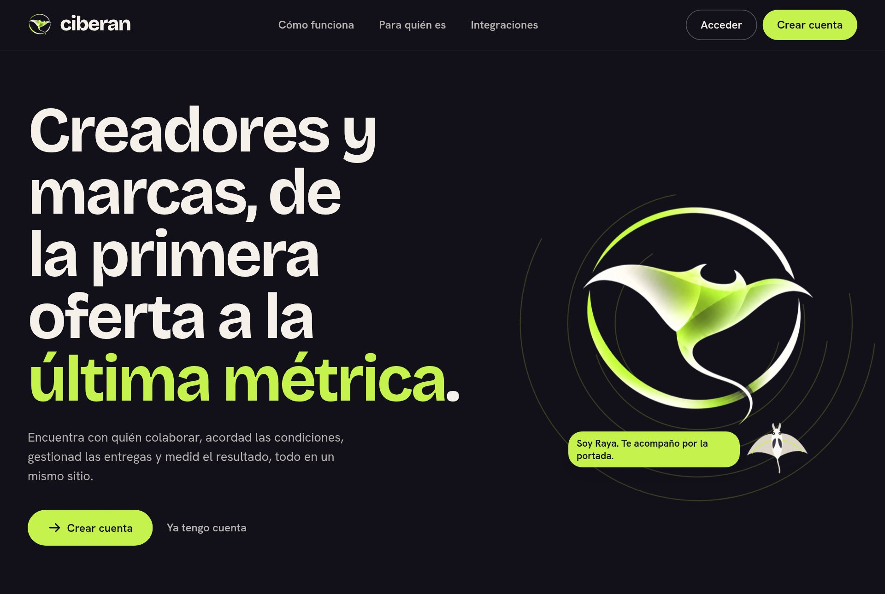
Para qué sirve
Con CIBERAN puedes:
- Encontrar con quién colaborar: los creadores aparecen en el buscador de las marcas, y las marcas en el de los creadores.
- Acordar las condiciones: precio, entregables y plazos quedan escritos, con propuesta, contraoferta y aceptación.
- Organizar el trabajo: cada pieza de contenido pasa por fases (idea, producción, revisión, programada, publicada).
- Revisar y aprobar: la marca ve el contenido antes de que salga y puede aprobarlo o pedir cambios.
- Ver cómo van las colaboraciones: plazos, tiempos de respuesta y resultados.
Qué problemas resuelve
| Antes | Con CIBERAN |
|---|---|
| Se negocia por mensajes sueltos y se pierde lo acordado. | Cada colaboración guarda el acuerdo, el precio y el historial. |
| «¿En qué punto estamos?» | Un indicador de Siguiente paso dice qué toca hacer y a quién le toca. |
| Los archivos se pierden entre correos y chats. | Cada colaboración tiene su espacio de archivos y su chat. |
| Nadie sabe si algo está aprobado. | Cada entrega tiene un estado claro: enviada, aprobada o con cambios pedidos. |
Creador y partner: dos perfiles
Al crear tu cuenta eliges uno de los dos perfiles. No se puede ser los dos a la vez con la misma cuenta.
| Creador de contenido | Partner (marca o empresa) | |
|---|---|---|
| Quién es | Persona que crea contenido y lo publica en sus redes. | Marca, empresa o agencia que quiere contratar contenido. |
| Qué hace | Gestiona sus publicaciones, sus colaboraciones y sus resultados. | Contacta con creadores, acuerda la colaboración y aprueba el contenido. |
| Qué publica en su perfil | Paquetes: lo que ofrece y a qué precio. | Necesidades: lo que busca y con qué presupuesto. |
| Su menú | Inicio, Publicaciones, Descubrir, Paquetes, Biblioteca, Colaboraciones, Resultados y Métricas (próximamente). | Inicio, Descubrir, Colaboraciones, Necesidades y Resultados. |
| Decide el contenido | Lo crea y lo envía a revisión. | Lo revisa: aprueba o pide cambios. |
Cómo se relacionan ambos perfiles
- El partner contacta con un creador (o el creador propone a una marca). Eso crea una solicitud de colaboración.
- La otra parte responde: acepta, rechaza o hace una contraoferta con otro importe.
- Cuando las dos partes están de acuerdo, la colaboración queda aceptada.
- El creador produce el contenido y lo envía a revisión.
- El partner aprueba o pide cambios.
- Con todo aprobado y publicado, la colaboración se completa y cada parte puede valorar a la otra.
Conceptos básicos
| Palabra | Qué significa |
|---|---|
| Colaboración | Un acuerdo concreto entre un creador y un partner, con importe, entregables y plazos. |
| Solicitud | El primer paso: alguien propone colaborar y espera respuesta. Caduca a los 7 días si nadie responde. |
| Contraoferta | Una respuesta con otro importe, en lugar de aceptar o rechazar. |
| Paquete | Lo que ofrece un creador (por ejemplo «1 Reel + 3 Stories», 300 €). |
| Necesidad | Lo que busca un partner (por ejemplo «Campaña de temporada», 500 €). |
| Entregable | Cada pieza de contenido que se acuerda entregar. |
| Publicación | Una pieza de contenido que el creador prepara. Si es de una colaboración, es un entregable. |
| Siguiente paso | El aviso que dice qué hay que hacer ahora y quién tiene que hacerlo. |
El glosario completo está en la Parte VII.
Parte II · Primeros pasos
Acceder a CIBERAN
Qué queremos hacer: abrir CIBERAN por primera vez.
Pasos
- Abre la dirección web de CIBERAN en el navegador del móvil o del ordenador.
- Verás la página de inicio, con los botones Acceder y Crear cuenta arriba a la derecha y Crear cuenta y Ya tengo cuenta en el centro.
- Si ya tienes cuenta, pulsa Acceder. Si no, pulsa Crear cuenta.
Qué sucede después
Irás a la pantalla de acceso o a la de registro.
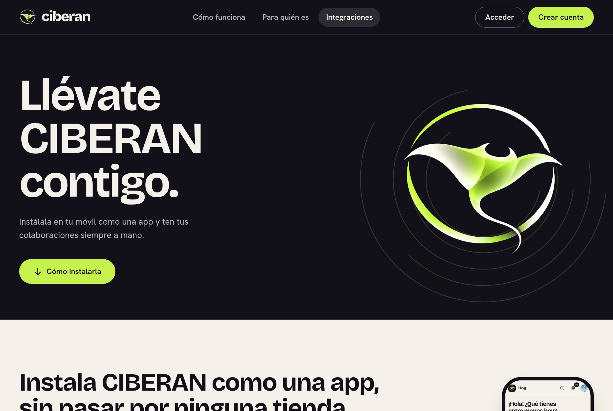
Registrarse
Qué queremos hacer: crear una cuenta gratuita.
Pasos
- Pulsa Crear cuenta.
- En el Paso 1 de 2, elige tu perfil: (1) Creador de contenido o (2) Partner.
- En el Paso 2 de 2 (Crea tu cuenta), escribe tu nombre. Si eres partner, también el nombre de la empresa.
- Escribe tu email y una contraseña de al menos 8 caracteres. Repítela.
- Marca la casilla de aceptación de los términos y la política de privacidad (puedes leerlos antes en los enlaces que aparecen).
- Pulsa el botón para crear la cuenta.
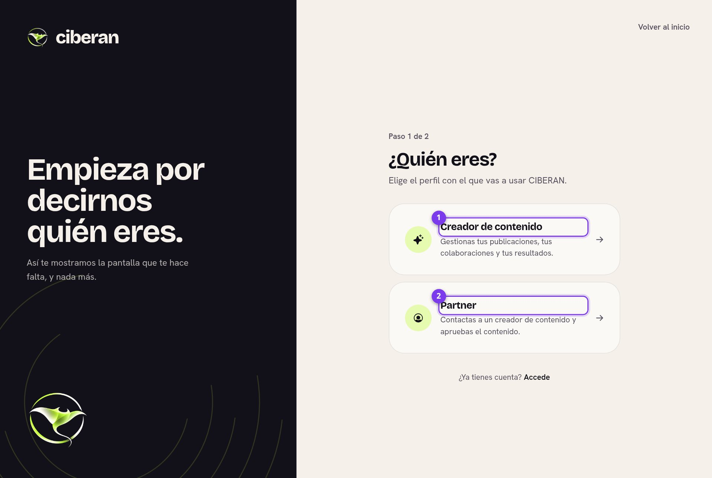
Qué sucede después
CIBERAN te envía un correo de confirmación y te muestra la pantalla Revisa tu email. Abre el correo y pulsa el enlace para activar la cuenta.
Iniciar sesión
Qué queremos hacer: entrar en tu cuenta.
Pasos
- En la página de inicio, pulsa Acceder.
- Escribe tu Email (1) y tu Contraseña.
- Pulsa Acceder (3).
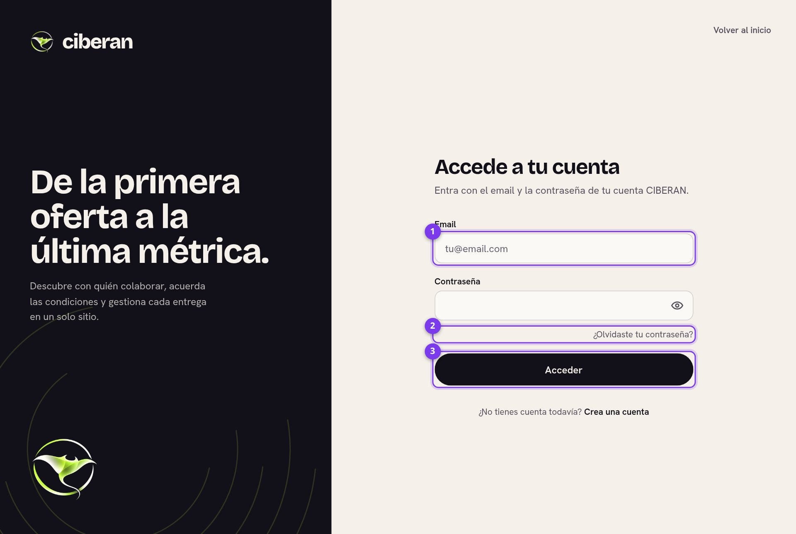
Qué sucede después
Entras en tu página de Inicio: la del creador o la del partner según el perfil que elegiste.
Si algo falla, verás uno de estos mensajes:
| Mensaje | Qué hacer |
|---|---|
| «Email o contraseña incorrectos.» | Revisa los datos. Si no recuerdas la contraseña, usa «¿Olvidaste tu contraseña?». |
| «Todavía no has confirmado tu email — revisa tu bandeja de entrada.» | Abre el correo de confirmación. Puedes pedir que te lo enviemos otra vez. |
| «Demasiados intentos seguidos — espera un momento y vuelve a intentarlo.» | Espera unos minutos antes de volver a probar. |
Recuperar el acceso
Qué queremos hacer: crear una contraseña nueva si no recuerdas la tuya.
Pasos
- En la pantalla de acceso, pulsa ¿Olvidaste tu contraseña? (2).
- En Recupera tu contraseña, escribe el email de tu cuenta y pulsa Enviar enlace.
- Abre el correo que recibirás y pulsa el enlace. Ábrelo en el mismo navegador donde hiciste la petición.
- En Elige una contraseña nueva, escribe la contraseña (mínimo 8 caracteres) y repítela.
- Confirma. Ya puedes entrar con la contraseña nueva.
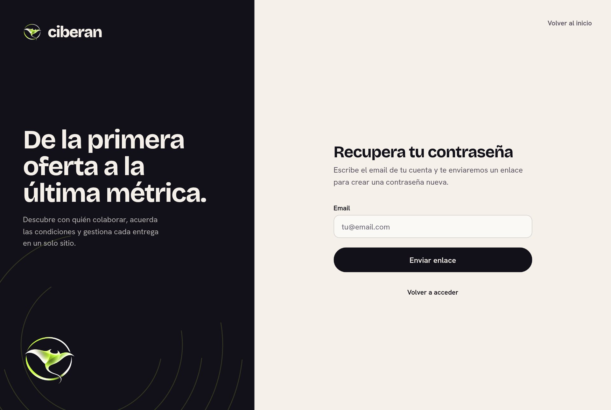
Si el enlace no funciona
Si ves «No podemos usar este enlace», tu contraseña no se ha cambiado. Pulsa Pedir un enlace nuevo y repite el proceso. Las causas habituales son que el enlace haya caducado, que ya lo hayas usado o que lo abras en otro navegador.
Si ves «Hay otra sesión abierta», pulsa Cerrar sesión y pedir un enlace nuevo.
Completar tu perfil
Qué queremos hacer: que tu perfil esté completo para que te encuentren y se fíen de ti.
Pasos
- Pulsa tu avatar (arriba a la derecha) para ir a Perfil.
- Mira el indicador Ficha completa al… y la lista Te falta: (foto de perfil, foto de portada, biografía, categorías, tarifa…).
- Pulsa Editar ficha y rellena lo que falte.
Qué sucede después
El porcentaje sube. Cuanto más completa esté tu ficha, mejor te muestran los buscadores de Descubrir.
Los detalles de cada campo están en la Parte III (creadores) y en la Parte IV (partners).
El primer acceso: el recorrido de bienvenida
La primera vez que entras, CIBERAN te enseña un recorrido de bienvenida de unos seis pasos. Va señalando, en el menú real, cada apartado de la aplicación y para qué sirve. Puedes pulsar Siguiente para avanzar o Saltar recorrido cuando quieras.
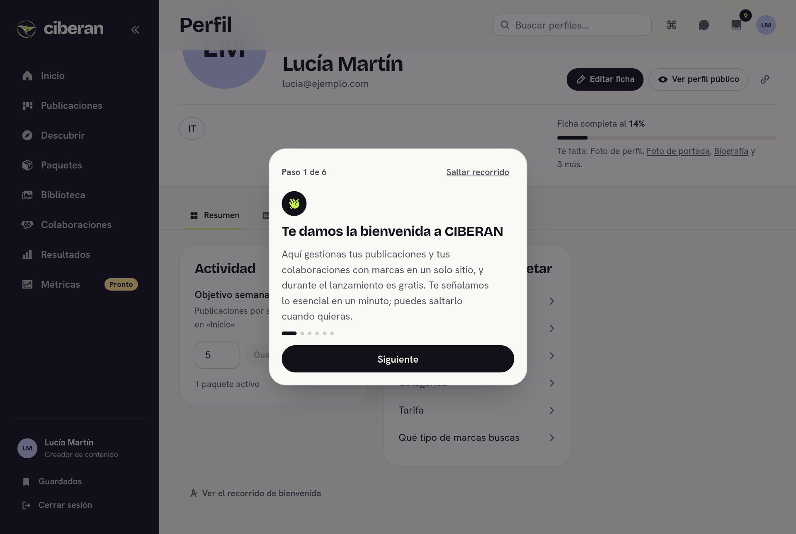
En tu página de Inicio también verás el cuadro Primeros pasos (por ejemplo «Completa tu ficha pública» o «Publica tu primer paquete»). Se va marcando solo según avanzas, y puedes ocultarlo con Ocultar.
Cómo moverte por CIBERAN
En el ordenador, el menú está a la izquierda. En el móvil, abajo, con un botón Más para el resto de apartados.
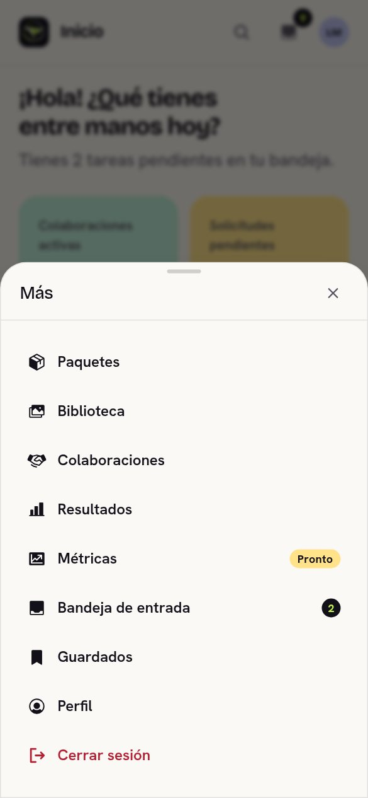
Arriba a la derecha tienes siempre cuatro accesos:
- Buscar perfiles: escribe un nombre para encontrar a cualquier creador o marca.
- Buscar y acciones (Ctrl K): la paleta de comandos. Salta a cualquier pantalla, o busca colaboraciones y perfiles, escribiendo unas letras.
- Chat: tus conversaciones.
- Bandeja de entrada: lo que te toca hacer y tus avisos. El número indica lo pendiente.
Tu avatar lleva a tu Perfil. Abajo del menú están Guardados, Ayuda (los manuales en PDF) y Cerrar sesión.
La paleta de comandos (Ctrl o Cmd + K)
Qué queremos hacer: ir a una pantalla o encontrar algo sin recorrer el menú.
Pasos
- Pulsa a la vez Ctrl y K (en Mac, Cmd y K), o pulsa el botón del símbolo ⌘ de la barra superior.
- Escribe unas letras. Por ejemplo «biblio» para ir a la Biblioteca.
- Con las flechas ↑ ↓ elige un resultado y pulsa Intro. Con Esc la cierras.
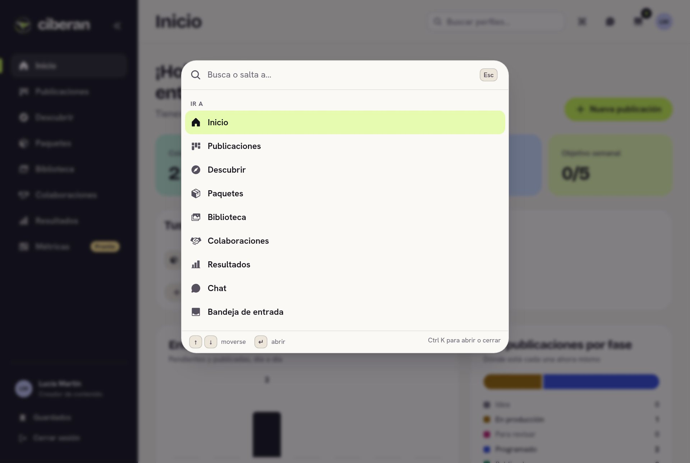
Qué sucede después
Se abre la pantalla elegida. Si escribes algo que no existe, verás «Nada coincide». Además de las pantallas, la paleta busca colaboraciones y perfiles por su nombre.
Parte III · Manual del creador
Esta parte es para quien eligió el perfil Creador de contenido. El menú del creador tiene estos apartados: Inicio, Publicaciones, Descubrir, Paquetes, Biblioteca, Colaboraciones, Resultados y Métricas (próximamente).
Inicio
Qué queremos hacer: ver de un vistazo qué tengo pendiente.
Pasos
- Pulsa Inicio en el menú.
- Mira el saludo: te dice cuántas tareas tienes pendientes en la bandeja.
- Recorre las tarjetas de colores y los bloques de debajo.

Marcadores de la imagen: (1) botón Nueva publicación, (2) tarjeta de Colaboraciones activas, (3) botón de la paleta de comandos.
Qué significa cada tarjeta
| Tarjeta | Qué cuenta |
|---|---|
| Colaboraciones activas | Las colaboraciones aceptadas que siguen en marcha. |
| Solicitudes pendientes | Solicitudes de marcas que esperan tu respuesta. |
| Entregas próximas | Publicaciones con fecha de entrega en los próximos días. |
| Objetivo semanal | Cuántas publicaciones llevas esta semana frente a tu objetivo (por ejemplo 0/5). El objetivo lo eliges en Perfil → Resumen. |
Debajo encontrarás:
- Tus paquetes: tus ofertas, con un botón Nuevo paquete.
- Entregas de los próximos 7 días: un gráfico, día a día, de lo pendiente y lo publicado.
- Tus publicaciones por fase: cuántas hay en Idea, En producción, Para revisar, Programado y Publicado.
- Entrega en N días: la próxima entrega, con enlace Ver publicación.
- Marcas que podrían interesarte: sugerencias, con enlace Ver todo.
- Necesita tu atención: lo que vence pronto.
- Primeros pasos: una lista que se marca sola (completar la ficha, publicar un paquete, contactar con una marca, crear una publicación). Puedes ocultarla con Ocultar.
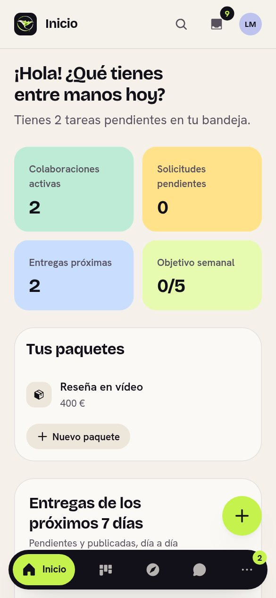
Perfil público
Tu perfil es lo primero que ven las marcas. Se compone de tu ficha (lo que escribes) y de tus paquetes (lo que ofreces).
Verlo y editarlo
Qué queremos hacer: ver cómo me ven las marcas y mejorar mi ficha.
Pasos
- Pulsa tu avatar, arriba a la derecha, para ir a Perfil.
- Pulsa (2) Ver perfil público para ver tu perfil tal como lo ven los demás, o el icono de enlace para copiar su dirección.
- Pulsa (1) Editar ficha para cambiar tus datos.
- Observa (3) Ficha completa al…: el porcentaje y la lista de lo que falta.
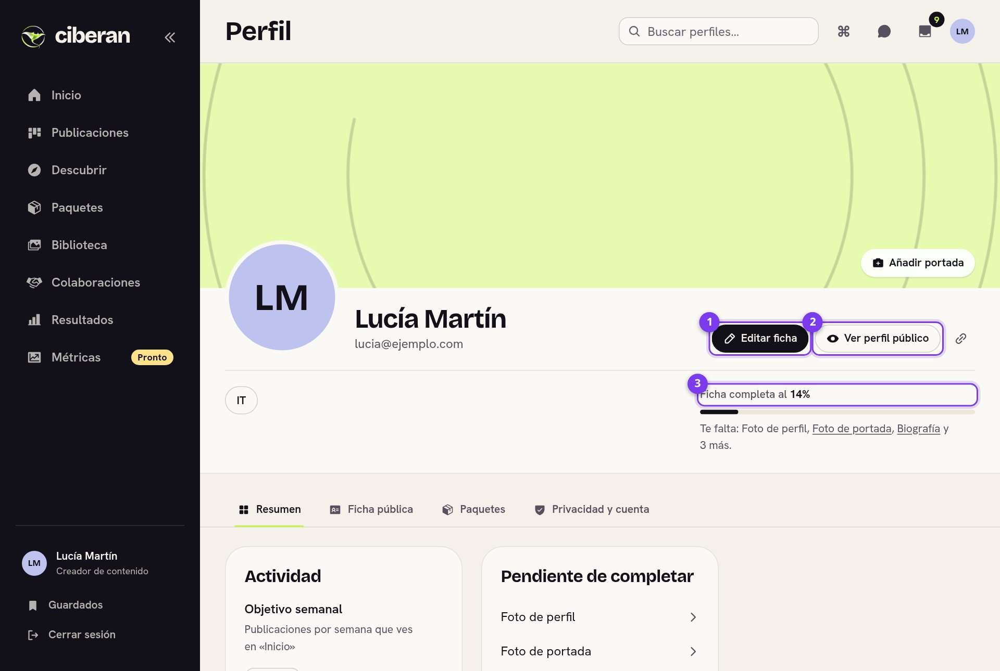
El perfil tiene cuatro pestañas: Resumen, Ficha pública, Paquetes y Privacidad y cuenta.
La ficha pública
En la pestaña Ficha pública completas lo que ve un partner en Descubrir. Cuanto más completa, mejor encajan los resultados.
| Apartado | Qué escribes |
|---|---|
| Presentación | Una frase de presentación (hasta 80 caracteres), tu ubicación (hasta 80) y tu biografía (hasta 500). También tu foto de perfil y tu foto de portada. |
| Categorías | Los temas de tu contenido (Moda, Belleza, Fitness, Viajes, Tecnología…). Los partners te encuentran por ellas. |
| Colaboración | Tu tarifa orientativa (desde / hasta, en euros), qué tipo de marcas buscas (hasta 300 caracteres) y si quieres mostrar con quién has colaborado. |
| Audiencia | Los países, las edades y el género de tu audiencia, en porcentaje. La declaras tú: las marcas la ven marcada como «declarada por el creador». Déjalo en blanco lo que no sepas. |
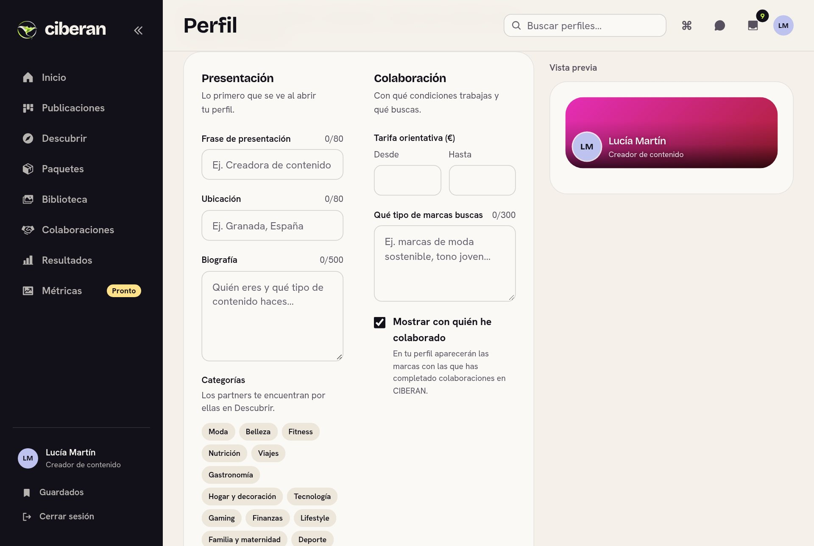
Privacidad y cuenta
En la pestaña Privacidad y cuenta decides:
- Privacidad del chat: Cualquiera (cualquier perfil puede escribirte) o Solo tras oferta aceptada (solo te escriben en texto libre quienes ya tienen una oferta aceptada contigo; aun así, cualquiera puede mandarte una oferta).
- Visibilidad del perfil: si tu perfil se ve sin iniciar sesión para quien abra tu enlace. Verá tu nombre, foto, presentación, categorías, contenido destacado y valoración. Las tarifas, el catálogo y el contacto siguen pidiendo sesión.
- Avisos: las solicitudes, ofertas y revisiones se avisan siempre. Eliges si quieres recordatorios de plazo, avisos de valoraciones, de notas del registro y de inicios de sesión. También los avisos por correo: un resumen si tienes avisos sin leer.
- Acceso a la cuenta: ves tu email y puedes cambiar tu contraseña o tu email (los pasos están justo debajo).
- Tus datos: Descargar una copia de tus datos (un ZIP con una hoja por tema), y Eliminar mi cuenta.
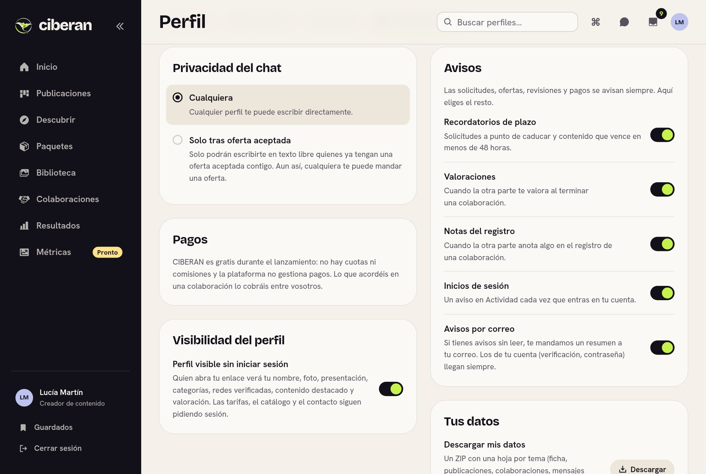
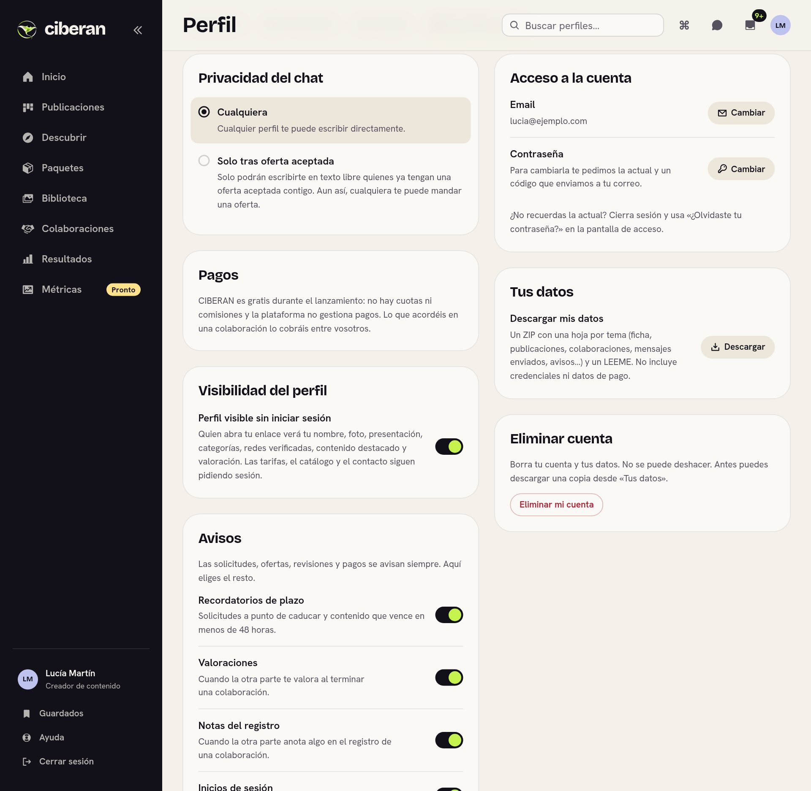
Cambiar la contraseña
Qué queremos hacer: poner una contraseña nueva estando dentro de tu cuenta.
Pasos
- Ve a Perfil → Privacidad y cuenta → Acceso a la cuenta (en el partner, Perfil → Privacidad) y pulsa Cambiar junto a «Contraseña».
- Paso 1 de 2: escribe tu contraseña actual y pulsa Enviar código al correo.
- Paso 2 de 2: abre el correo que te hemos enviado y escribe el código de 6 dígitos (puedes pegarlo tal cual llega, con o sin guiones).
- Escribe la contraseña nueva y repítela. Mientras escribes, un medidor te dice si es Muy débil, Débil, Aceptable, Buena o Excelente y te da un consejo.
- Deja marcada (o desmarca) la casilla Cerrar la sesión en mis otros dispositivos.
- Pulsa Cambiar contraseña.
Qué sucede después
Verás el aviso «Contraseña cambiada». Si dejaste la casilla marcada, se cierra la sesión en tus demás dispositivos y tendrás que volver a entrar en ellos con la contraseña nueva.
Descubrir
Qué es: el buscador de marcas. Aquí encuentras empresas interesadas en tu contenido y puedes proponerles una colaboración.
Pasos
- Pulsa Descubrir en el menú.
- Para buscar por nombre, escribe en (1) Buscar marca por nombre.
- Afina con los (2) Filtros: Categorías, Presupuesto y Más filtros.
- Cambia el orden con (3) Ordenar: más afines, más colaboraciones, responden antes, presupuesto o precio del paquete (de menor a mayor o al revés).
- Cambia entre Rejilla y Carrusel para ver las tarjetas de otra forma.
- Pulsa Guardar búsqueda para guardar tus filtros.

Cómo leer una tarjeta de marca
Cada tarjeta muestra el nombre de la marca, cuántas colaboraciones tiene, si ha publicado necesidades (por ejemplo «1 necesidad · desde 500 €»), su presupuesto y tres acciones: (4) Proponer, el icono de marcador para guardarla y el icono de mensaje para escribirle.
Con Guardados (en el menú, abajo) ves a quienes has marcado. En el buscador también existe un modo Con IA, que permite describir con tus palabras lo que buscas.
Proponer una colaboración a una marca
Qué queremos hacer: enviar a una marca una propuesta con mi tarifa y mis entregables.
Pasos
- En una tarjeta de marca, pulsa Proponer. Se abre la hoja Proponer a….
- Escribe (o ajusta con el deslizador) Tu tarifa (€). Si la marca indicó un rango, lo verás al lado.
- En Entregables, elige cuántos Reels / vídeos, Posts y Stories ofreces, con los botones + y −. Hace falta al menos uno.
- En Uso del contenido por la marca, elige: Sin uso, 1 mes, 3 meses, 6 meses, 1 año o Perpetuo.
- Si quieres, pon un Nombre de la campaña y un Mensaje.
- En Más condiciones (opcional) puedes indicar el objetivo, el público, el tono, las revisiones incluidas y si pides exclusividad.
- Marca la casilla: «Entiendo que la propuesta es vinculante…».
- Pulsa Enviar propuesta.
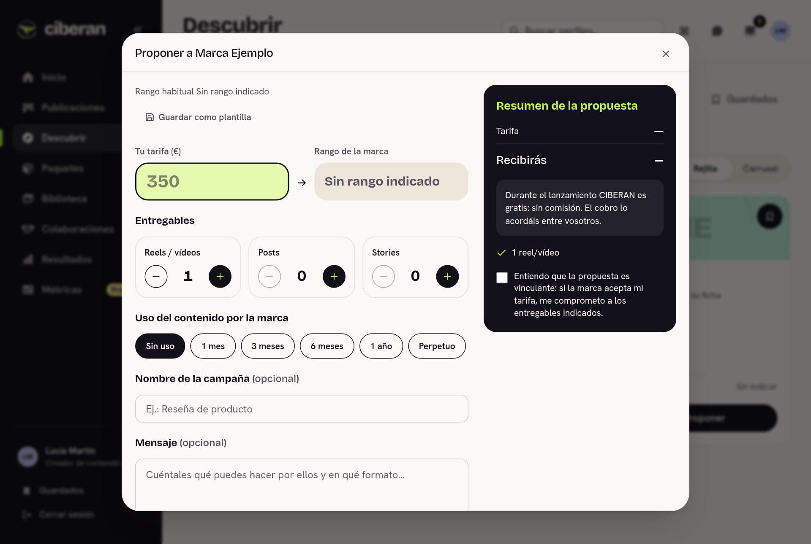
Qué sucede después
Verás «Propuesta enviada» y «Te avisamos en cuanto responda». La solicitud aparece en Colaboraciones → Solicitudes.
Colaboraciones
Aquí vive cada acuerdo, desde que se propone hasta que se cierra. Pulsa Colaboraciones en el menú.
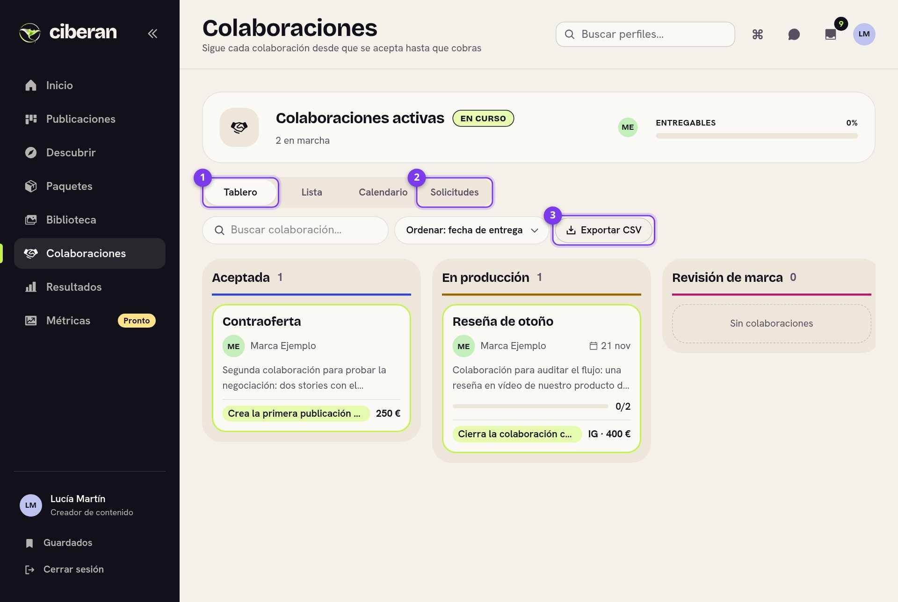
La página tiene cuatro vistas (1): Tablero, Lista, Calendario y Solicitudes, y arriba un resumen de las colaboraciones en marcha y del avance de los entregables. Puedes buscar una colaboración, ordenarla (por fecha de entrega, importe o más recientes) y pulsar (3) Exportar CSV para descargar el listado en una hoja de cálculo.
| Vista | Para qué sirve |
|---|---|
| Tablero | Columnas por fase: Aceptada, En producción, Revisión de marca y Publicada. |
| Lista | Todas en filas, agrupadas por fase, con formato, avance de entregables, fecha e importe. |
| Calendario | Las fechas de entrega en un calendario mensual. |
| Solicitudes | Las propuestas que aún no están aceptadas: las que tú recibes y las que tú envías. |
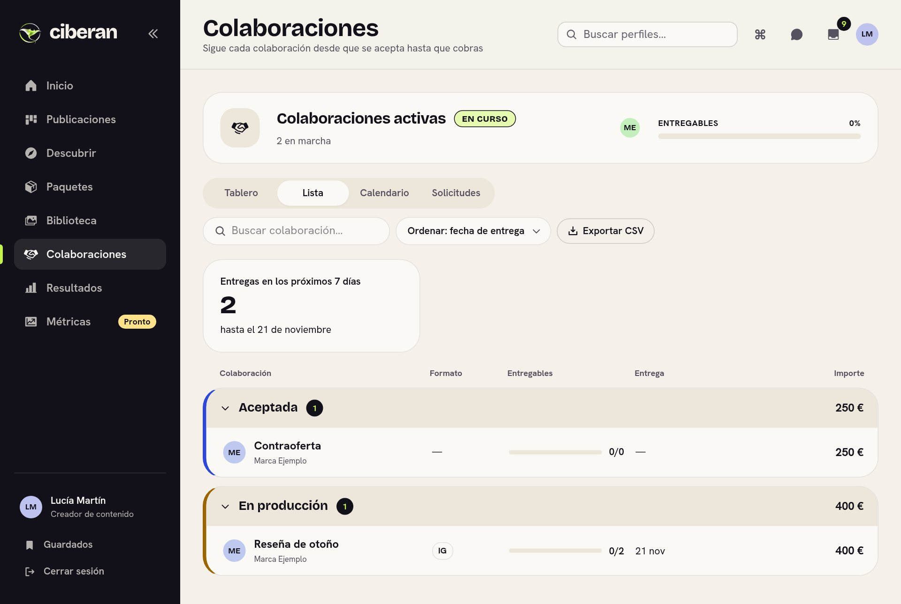
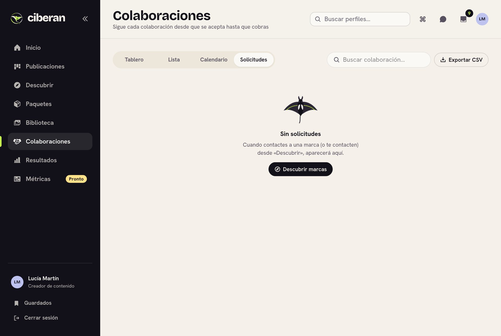
Recibir y responder a una solicitud
Qué queremos hacer: responder a una marca que me propone colaborar.
Pasos
- Fíjate en el aviso de Bandeja de entrada o en la tarjeta Solicitudes pendientes de Inicio.
- Entra en Colaboraciones → Solicitudes y pulsa la solicitud.
- Lee el resumen: quién escribe, el importe, el brief y los plazos. Verás un aviso de caducidad: las solicitudes caducan a los 7 días.
- En el bloque Presupuesto y respuesta, elige una de tres opciones.
| Opción | Qué hace |
|---|---|
| Aceptar · (importe) | Aceptas las condiciones. La colaboración pasa a Aceptada. |
| Hacer contraoferta | Propones otro importe, con un mensaje opcional. La otra parte decide. |
| Rechazar solicitud | La rechazas. Pide una confirmación. |
Hacer una contraoferta
- Pulsa Hacer contraoferta.
- Escribe el nuevo importe (€) y, si quieres, un mensaje (por ejemplo, por qué).
- Envía la contraoferta.
Ahora le toca a la otra parte. Verás el aviso Siguiente paso: «te toca a ti» o «le toca a (la otra persona)» según quién deba mover ficha. Los avisos Por responder y Siguiente paso se calculan según quién hizo la última propuesta: si tú hiciste la última, esperas; si la hizo la otra parte, te toca a ti.
Rechazar una solicitud
- Pulsa Rechazar solicitud.
- CIBERAN pregunta: «¿Seguro? No se puede deshacer.»
- Pulsa Cancelar para volver atrás o Sí, rechazar para confirmar.
Al confirmar, verás el aviso «Solicitud rechazada» y volverás al listado. La colaboración queda en estado Rechazada.
Qué sucede después de aceptar
La colaboración queda Aceptada y se abre su espacio de trabajo, que se explica a continuación.
El espacio de una colaboración
Al abrir una colaboración aceptada verás tres zonas.
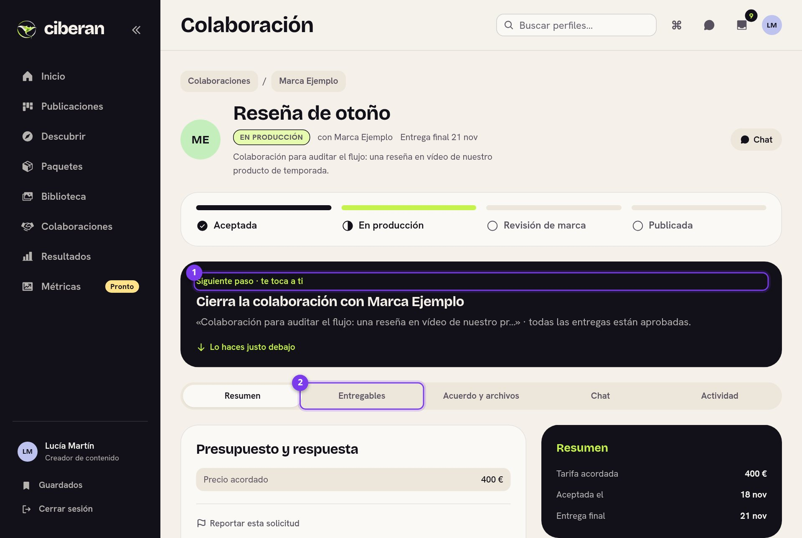
- La cabecera, con el nombre de la colaboración, su estado, la marca, la entrega final y un botón Chat. Debajo, una barra con las fases: Aceptada → En producción → Revisión de marca → Publicada.
- Siguiente paso (1): una caja oscura que dice qué hay que hacer ahora y si te toca a ti o le toca a la otra parte. Por ejemplo, «Crea la primera publicación para…» o «Cierra la colaboración con…».
- Cinco pestañas (2): Resumen, Entregables, Acuerdo y archivos, Chat y Actividad.
Fases de una colaboración
| Fase | Cuándo se alcanza |
|---|---|
| Aceptada | Se aceptó, pero aún no hay ninguna publicación empezada. |
| En producción | Hay alguna publicación en marcha. |
| Revisión de marca | Alguna publicación espera la aprobación de la marca. |
| Publicada | Todo está publicado, o la colaboración se ha completado. |
Estados de una colaboración
| Estado | Significado |
|---|---|
| Pendiente de respuesta | Alguien propuso y falta que la otra parte responda. |
| Aceptada | Las dos partes están de acuerdo. |
| En curso | Se trabaja en las publicaciones. |
| Completada | Se cerró con todo entregado. |
| Rechazada | Alguien rechazó la solicitud. |
| Cancelada | Las dos partes acordaron cancelarla. |
| Terminada por incumplimiento | Una parte la dio por terminada porque no se cumplió lo pactado. |
Los entregables
La pestaña Entregables lista las publicaciones vinculadas a la colaboración, cada una con su estado (Programado, Para revisar…), su aprobación (Aprobada) y su versión (v1).
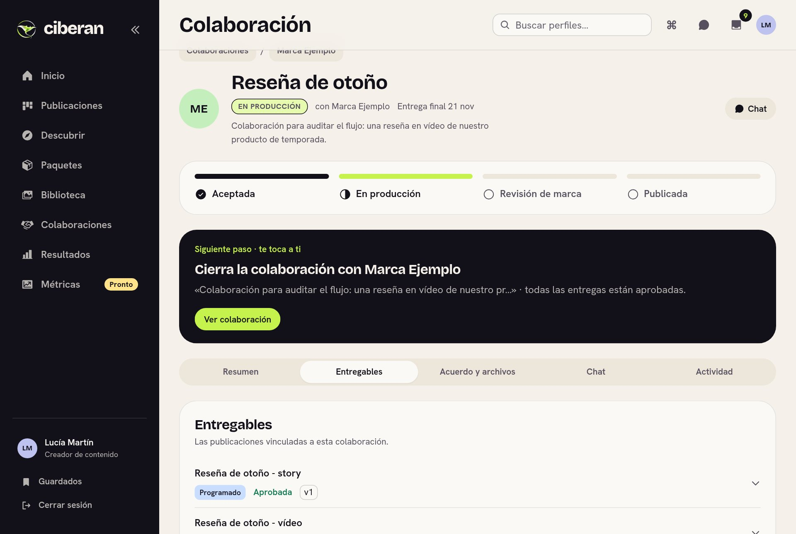
En esta pestaña puedes:
- Ver cuántos entregables están resueltos («N de M resueltos»).
- Crear publicación para un entregable (te lleva al editor con la colaboración ya elegida) o Asignar una que ya tienes.
- Confirmar entregables cuando la marca los ha definido. Hasta que los confirmes, no son exigibles para completar la colaboración.
- Usar las opciones avanzadas de cada entregable: Aceptar sin aprobación, Renunciar y Reabrir. Todas piden un motivo obligatorio (mínimo 10 caracteres) que ven las dos partes.
Algunas etiquetas pueden aparecer junto a un entregable: Aprobación invalidada, Editada tras publicar, Sin aprobación o Decisión caducada. Indican que el contenido cambió después de aprobarse y puede necesitar una nueva revisión.
Acuerdo y archivos
La pestaña Acuerdo y archivos recoge el brief, las condiciones pactadas, el presupuesto y los archivos compartidos.
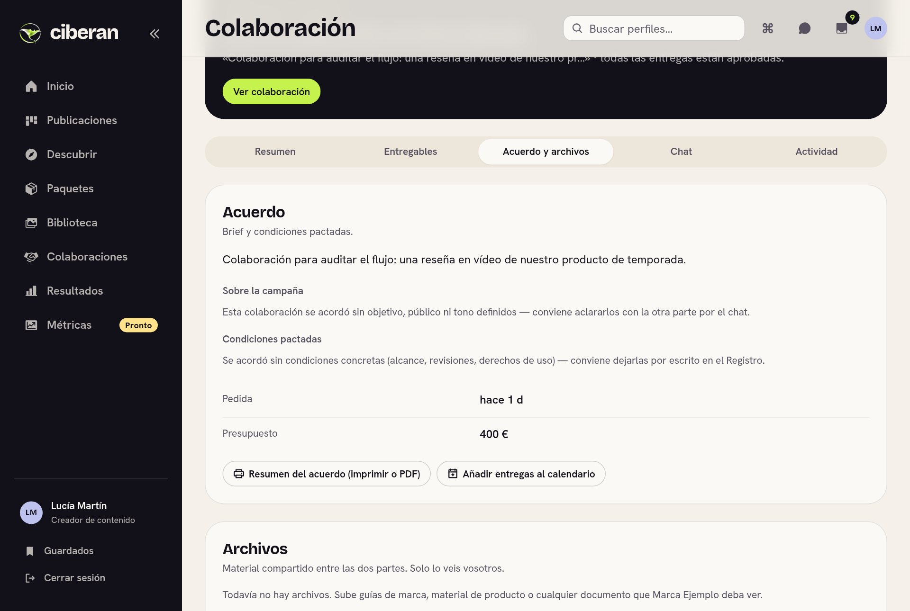
- Acuerdo: el brief, Sobre la campaña (objetivo, público y tono) y las Condiciones pactadas (alcance, revisiones y derechos de uso). Si no se fijaron, la pantalla lo dice y recomienda aclararlo por chat.
- Resumen del acuerdo (imprimir o PDF): abre un resumen para guardar o imprimir.
- Añadir entregas al calendario: descarga un archivo para tu calendario (Google, Apple, Outlook).
- Archivos: material compartido solo entre las dos partes. Se aceptan PDF, imágenes y documentos de hasta 10 MB, con un máximo de 20 archivos. Se sube con Subir archivo.
Chat y actividad
- Chat: la conversación de esta colaboración. Tiene respuestas rápidas («Recibido, gracias», «¿Puedes revisarlo?», «Propongo otra fecha», «Lo tengo esta semana»).
- Actividad: la cronología de todo lo ocurrido, de lo más reciente a lo más antiguo: solicitud, aceptación, envíos a revisión, cambios pedidos y aprobaciones. Con Añadir apunte dejas una nota que ven las dos partes, y puedes filtrar por Todo o Mensajes y acciones.
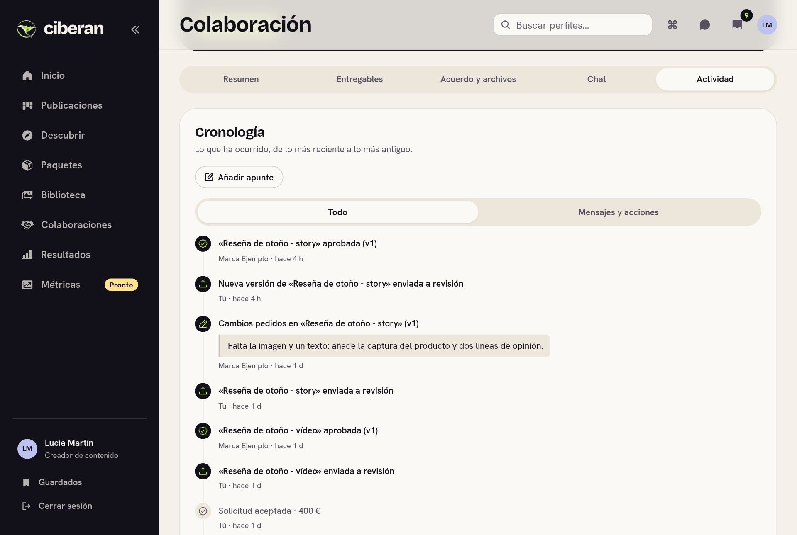
Completar la colaboración
Qué queremos hacer: cerrar la colaboración cuando todo está entregado.
Pasos
- Cuando todas las entregas están aprobadas, el Siguiente paso dice «Cierra la colaboración…».
- En el bloque Presupuesto y respuesta, pulsa Marcar como completada.
Qué sucede después
La colaboración pasa a Completada. Cada parte puede dejar una valoración de la otra, con estrellas y un comentario opcional sobre la comunicación y el cumplimiento de plazos. La valoración alimenta el apartado Valoración del perfil.
Cancelar o terminar una colaboración
En Más acciones tienes dos opciones.
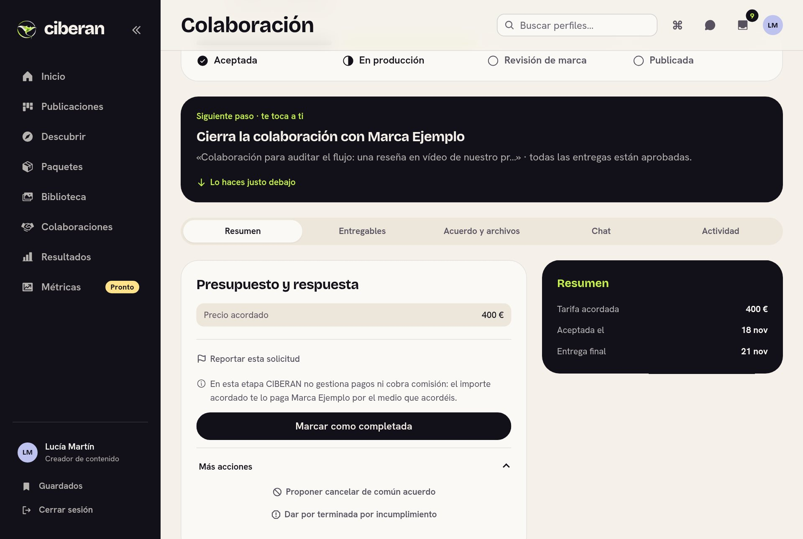
| Opción | Cómo funciona |
|---|---|
| Proponer cancelar de común acuerdo | Explicas el motivo. La otra parte puede Aceptar la cancelación o Seguir con la colaboración. Hasta que responda, todo sigue igual, y tú puedes Retirar la propuesta. |
| Dar por terminada por incumplimiento | Cierra la colaboración sin esperar a la otra parte. Úsalo solo si de verdad no se cumplió lo pactado. Queda en la cronología y lo ve el equipo de CIBERAN. |
También puedes usar Reportar esta solicitud si algo te parece indebido. El equipo revisa los reportes y puede avisar o bloquear cuentas, pero no puede reclamar importes ni emprender acciones legales.
Publicaciones
Es el centro de trabajo del creador: aquí preparas cada pieza de contenido y la llevas de la idea a la publicación. Pulsa Publicaciones en el menú.

Las tres vistas
Arriba (2) eliges Tablero, Calendario o Lista.
| Vista | Qué muestra |
|---|---|
| Tablero | Una columna por fase: Idea, En producción, Para revisar, Programado, Publicado. Arrastra una tarjeta a otra columna para cambiarla de fase. |
| Calendario | Un calendario mensual. Arrastra una entrega a otro día para reprogramarla. |
| Lista | Todas las publicaciones en filas. |
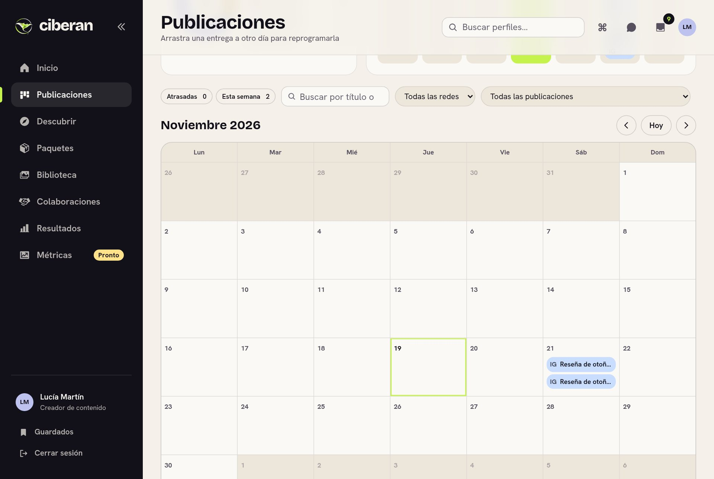
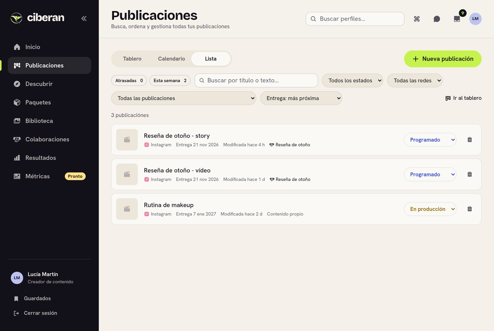
Encima del tablero verás la semana actual, con cada entrega en su día y los contadores Atrasadas y Esta semana. Puedes buscar por título, texto o hashtags, y filtrar por (3) red y por colaboración (todas, contenido propio o una en concreto).
Crear una publicación
Qué queremos hacer: anotar una pieza de contenido nueva.
Pasos
- En Publicaciones, pulsa (1) Nueva publicación (también está en Inicio).
- Escribe el Título interno (solo para reconocerla en tu tablero).
- Si quieres, escribe el Texto de la publicación (hasta 2.200 caracteres) y los Hashtags (separados por espacios o comas; la almohadilla se pone sola).
- En ¿Para quién es?, elige Contenido propio (solo lo ves tú, no cuenta como entregable) o Para una colaboración (y elige cuál).
- Elige la Red donde se publicará (TikTok, YouTube, X, Instagram, Facebook o LinkedIn). Si va también a otras redes, márcalas en ¿También en otras redes?.
- Elige el Formato (por ejemplo, Reel) y la Fecha de entrega.
- Guarda.
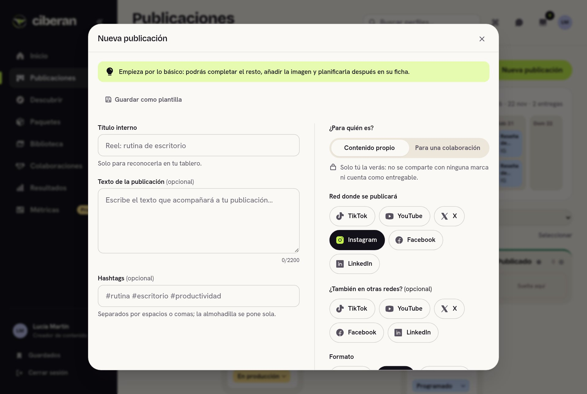
Qué sucede después
La publicación aparece en el tablero, en la columna que corresponda, y en el calendario. Si es de una colaboración, la marca la ve y cuenta como entregable.
Borrador automático
Si cierras la ventana de «Nueva publicación» a medias, CIBERAN guarda lo que habías escrito (hasta 14 días) y te lo devuelve la próxima vez que la abras, con el aviso «Hemos recuperado tu borrador». Pulsa Descartar para empezar de cero. El borrador se guarda en tu navegador: no se ve desde otro dispositivo ni desde otro navegador.
La ficha de una publicación
Al abrir una publicación ves toda su información.
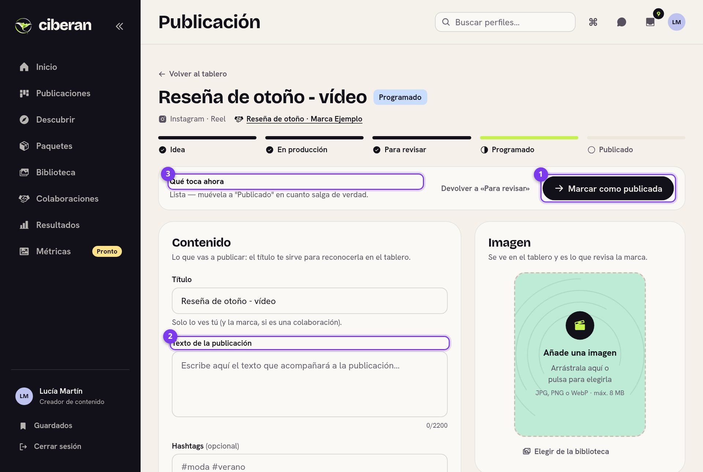
- Barra de fases: Idea, En producción, Para revisar, Programado, Publicado.
- Qué toca ahora (3): te propone la siguiente acción, con un botón principal como (1) Marcar como publicada, y otro para devolverla a «Para revisar».
- Contenido: título, Texto de la publicación (2) con contador y Hashtags. El botón Copiar texto y hashtags te lo deja listo para pegar en la red.
- Historial de revisión: lo que ha dicho la marca (por ejemplo, «aprobó esta publicación»).
- Imagen: la que ve la marca al revisar. Se sube arrastrándola o pulsando, o con Elegir de la biblioteca (JPG, PNG o WebP, máximo 8 MB).
- Entrega: enlaces para que la marca vea el borrador y, al final, el resultado. Se explican más abajo.
- Planificación: fecha de entrega, red, formato, versión y fechas de creación y edición.
- Checklist: apuntes de lo que no quieres olvidar (grabar, editar, subtítulos).
- Etiquetas: para agrupar publicaciones en el tablero.
- Reutilizar: Duplicar publicación y Guardar como plantilla.
- Eliminar publicación.
Los enlaces de entrega
En el apartado Entrega hay dos campos opcionales:
- Enlace al borrador: para un vídeo o archivo pesado en Drive, WeTransfer o un enlace privado. La marca lo ve al revisar.
- Enlace de la publicación: cuando ya está publicada en la red, pega aquí su enlace. Queda como resultado de la colaboración.
Varias redes en una publicación
Una publicación tiene una red principal y puede indicar otras redes donde también se publicará. Se elige al crearla.
Revisión por la marca
Cuando una publicación es de una colaboración y la envías a revisión (estado Para revisar), la marca puede aprobarla o pedir cambios con un comentario. Tú ves lo que dice en el Historial de revisión y en la Actividad de la colaboración.
- Envía la publicación a Para revisar (con el botón de «Qué toca ahora» o arrastrando la tarjeta).
- La marca la revisa: Aprobar o Pedir cambios.
- Si pide cambios, lee su comentario, corrige el contenido y vuelve a enviarla: se crea una nueva versión (v2, v3…).
- Si la aprueba, aparece Aprobada y puedes programarla y publicarla.
Duplicar y guardar como plantilla
Qué queremos hacer: no escribir lo mismo dos veces.
Pasos
- Abre la publicación que quieres reutilizar.
- En Reutilizar, pulsa Duplicar publicación para empezar otra pieza con los mismos datos, o Guardar como plantilla.
- Para una plantilla, ponle un nombre y guarda. Si usas un nombre que ya existe, se actualiza esa plantilla.
- La próxima vez, al pulsar Nueva publicación, elige la plantilla en Usar una plantilla…. Se rellena el formulario y puedes retocar lo que quieras antes de guardar.
Deshacer
CIBERAN te deja deshacer algunas acciones durante unos segundos:
| Acción | Cómo deshacerla |
|---|---|
| Eliminar una publicación | Aparece el aviso «…eliminada» con Deshacer. Tienes 8 segundos. Pasado ese tiempo se borra del todo. |
| Cambiar el estado de una publicación | Tras mover la tarjeta, el aviso incluye Deshacer para devolverla a su fase anterior. |
| Eliminar una imagen de la biblioteca | Igual: 8 segundos para Deshacer. |
Biblioteca de archivos
Qué es: tu almacén de imágenes listas para reutilizar como portada de publicaciones y de paquetes. Es una función solo del creador.
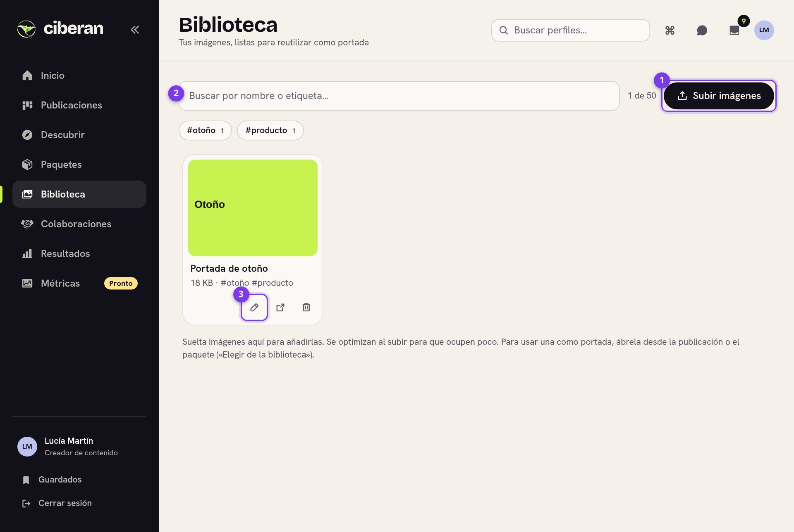
| Qué | Detalle |
|---|---|
| Formatos | JPG, PNG y WebP. |
| Tamaño | Hasta 8 MB por archivo. |
| Cantidad | Hasta 50 archivos. El contador (por ejemplo «1 de 50») está arriba. |
| Optimización | Al subir, CIBERAN reduce cada imagen (como mucho 2.000 píxeles de lado) y la guarda en un formato más ligero. Se ve igual, pero ocupa mucho menos. |
Subir imágenes
- Pulsa Subir imágenes (1), o arrastra imágenes sobre la página.
- Si algún archivo no es válido (formato o tamaño), verás un aviso con el motivo.
Buscar, etiquetar y renombrar
- Escribe en (2) Buscar en la biblioteca para filtrar por nombre o etiqueta, o pulsa una etiqueta (por ejemplo #otoño) para ver solo esas imágenes.
- Pulsa (3) el icono del lápiz (Editar nombre y etiquetas) para cambiar el nombre y poner hasta 8 etiquetas (por ejemplo «#otoño #producto»).
- Con el icono de enlace abres la imagen en otra pestaña, y con la papelera la borras (con 8 segundos para deshacer).
Usar una imagen de la biblioteca
- Abre la publicación o el paquete donde quieres la imagen.
- Pulsa Elegir de la biblioteca.
- Busca y pulsa la imagen que quieras.
- Si todavía no la tienes en la biblioteca, pulsa Subir una imagen en el propio selector. Si subes una sola, se elige automáticamente.
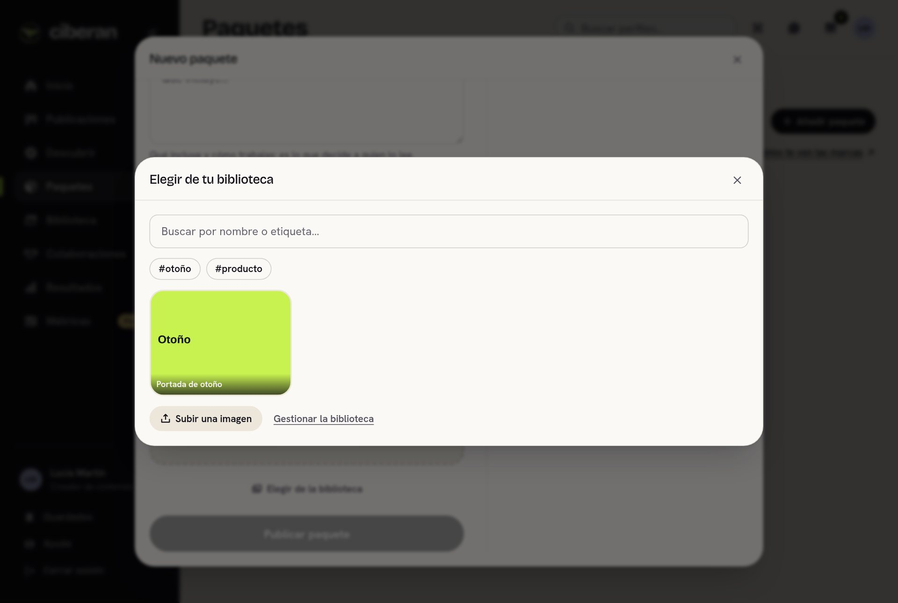
Paquetes
Qué son: lo que ofreces. Un paquete describe un servicio y su precio (por ejemplo «Reseña en vídeo · 400 €»). Una marca puede hacerte una oferta sobre cualquiera.
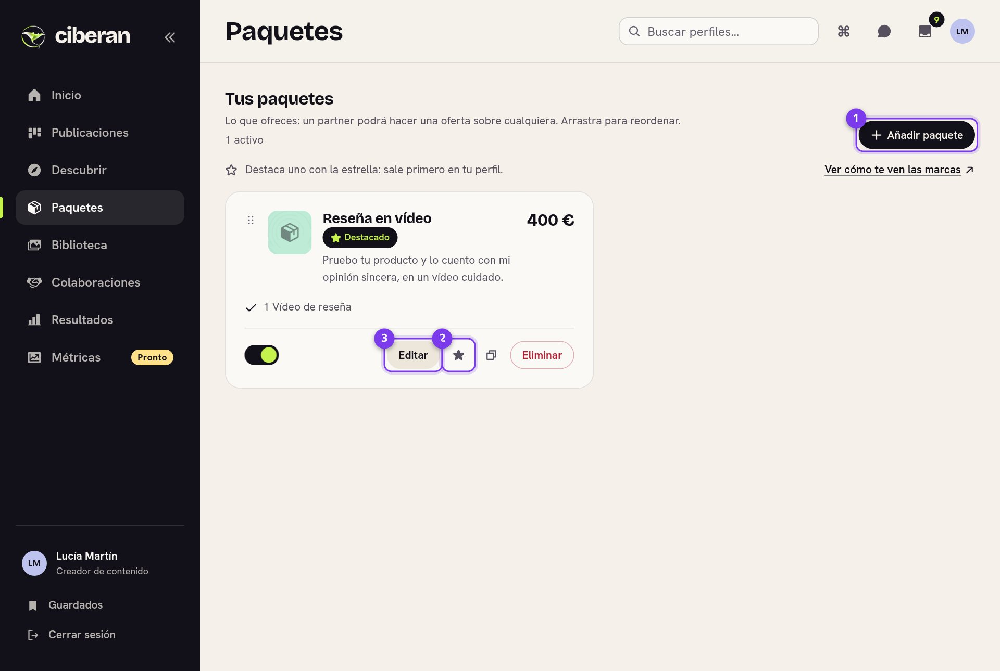
Crear un paquete
Pasos
- Pulsa Paquetes en el menú y luego (1) Añadir paquete (también hay un Nuevo paquete en Inicio).
- Si quieres ir más rápido, elige una plantilla en Empieza con una plantilla: 1 Reel, Reel + 3 Stories, 3 Stories, Reseña en vídeo, Unboxing o Pack mensual. Luego lo puedes editar todo.
- Escribe el Título y, si quieres, la Descripción (qué incluye y cómo trabajas).
- Escribe los Entregables, uno por uno, y pulsa Intro después de cada uno. Tienes sugerencias debajo.
- Escribe el Precio del paquete: lo que cobras por el paquete completo.
- Si quieres, añade una portada: sube una imagen o pulsa Elegir de la biblioteca.
- Mira la Vista previa y pulsa Publicar paquete.
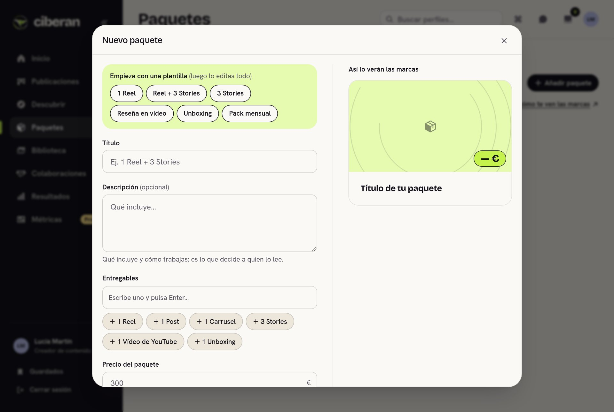
Qué sucede después
El paquete aparece en tu lista y en tu perfil público. Los partners pueden hacerte una oferta sobre él.
Gestionar los paquetes
Cada tarjeta tiene acciones: Pausar paquete (deja de aparecer sin borrarlo), Editar, Duplicar paquete, Eliminar y la estrella para destacarlo.
- Destacado (2): el paquete destacado sale primero en tu perfil. Solo se puede destacar uno. Aparece una etiqueta Destacado y, para quitarlo, Quitar como destacado.
- Reordenar: arrastra las tarjetas para cambiar el orden.
- Ver cómo te ven las marcas: abre tu perfil público.
Ofertas y chat
Además de las solicitudes de colaboración, hay otra forma de empezar a trabajar: una oferta sobre un paquete.
- Un partner puede ir a tu perfil público y pulsar Hacer oferta sobre uno de tus paquetes, o hacerla desde el chat con el botón Oferta. Puede proponer un precio distinto al listado, para negociar.
- Tú la ves en el chat, en una tarjeta con los botones Aceptar y Rechazar. Si el paquete ya no existe, la tarjeta dice «Esta oferta ya no está disponible».
El Chat (icono de burbuja, arriba) lista tus conversaciones con filtros Todas, No leídas y Ofertas, y un buscador por nombre. Las ofertas que esperan tu respuesta aparecen marcadas. Para iniciar un chat, ve al perfil de alguien en Descubrir y pulsa el icono de mensaje. Las conversaciones en las que todavía no se ha escrito nada no aparecen en la lista hasta que haya un mensaje.
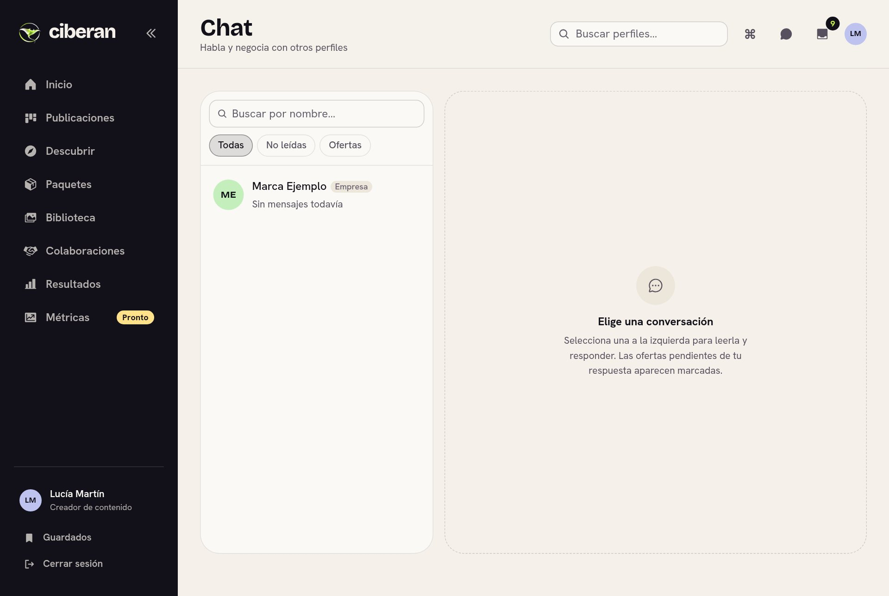
Resultados
Qué es: cómo van tus colaboraciones dentro de CIBERAN. Pulsa Resultados en el menú y elige el periodo: 3 meses, 6 meses, 12 meses o Todo.
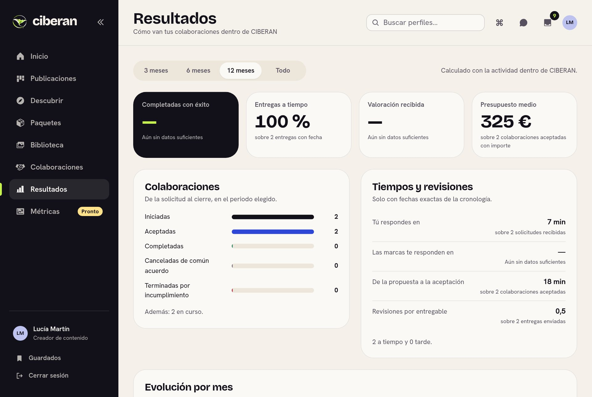
| Indicador | Qué mide |
|---|---|
| Completadas con éxito | Colaboraciones cerradas con todo entregado. |
| Entregas a tiempo | Porcentaje de entregas que llegaron a su fecha. |
| Valoración recibida | La media de las valoraciones que te dan las marcas. |
| Presupuesto medio | El importe medio de tus colaboraciones aceptadas. |
| Colaboraciones | Cuántas se iniciaron, aceptaron, completaron, cancelaron de común acuerdo o terminaron por incumplimiento, y cuántas hay en curso. |
| Tiempos y revisiones | En cuánto respondes tú, en cuánto responden las marcas, cuánto tarda una propuesta en aceptarse y cuántas revisiones lleva cada entregable. |
| Evolución por mes | Un gráfico mensual de iniciadas, aceptadas y completadas. |
Métricas de redes
El menú muestra Métricas con la etiqueta Pronto. Al pulsarla, la página dice «Próximamente».
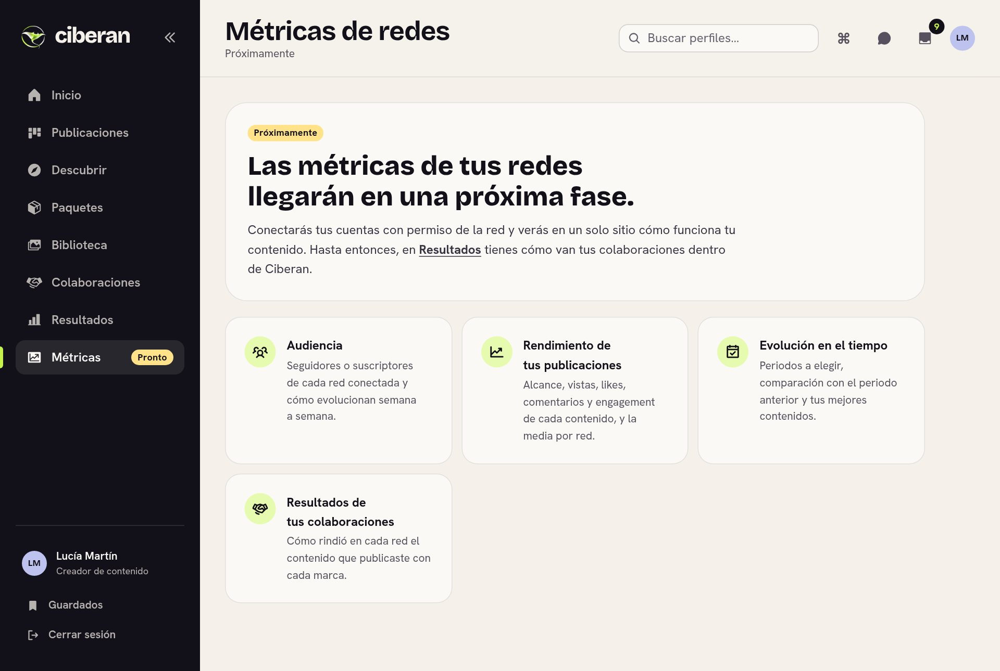
Predicción de rendimiento
Calendario
CIBERAN tiene calendario en dos sitios:
- Publicaciones → Calendario: tus publicaciones por día. Se pueden arrastrar a otro día para cambiar la fecha de entrega, y crear una publicación desde un día.
- Colaboraciones → Calendario: las fechas de entrega de tus colaboraciones.
Además, en la pestaña Acuerdo y archivos de cada colaboración, Añadir entregas al calendario descarga un archivo para llevarlas a Google Calendar, Apple Calendar u Outlook.
Suscribirte al calendario (se actualiza solo)
Qué queremos hacer: ver tus fechas de entrega en Google Calendar, Apple Calendar u Outlook sin descargar nada cada vez.
Pasos
- Entra en Colaboraciones y abre la vista Calendario.
- Pulsa Suscribirme al calendario.
- Pulsa Copiar enlace (o Abrir en mi calendario, que lo abre directamente en la aplicación de tu dispositivo).
- En tu calendario, añade una suscripción «desde una dirección web» y pega el enlace:
- Google Calendar: Otros calendarios (+) → Desde URL.
- Apple Calendar: Archivo → Nueva suscripción a calendario.
- Outlook: Agregar calendario → Suscribirse desde la web.
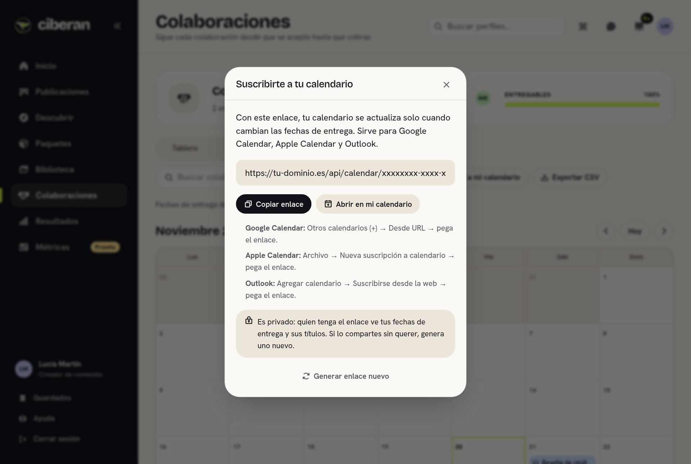
Qué sucede después
Tu calendario consulta el enlace cada cierto tiempo y muestra tus entregas con fecha (las de colaboraciones y, si eres creador, también tu contenido propio), de los últimos 30 días en adelante. Los cambios de fecha se reflejan solos; el tiempo que tarda depende de cada aplicación de calendario.
Bandeja de entrada
La Bandeja de entrada (icono arriba a la derecha) reúne lo que te toca hacer y tus avisos, en tres pestañas.
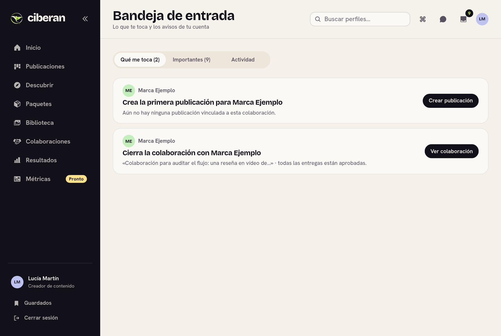
| Pestaña | Qué contiene |
|---|---|
| Qué me toca | Tareas con botón de acción (por ejemplo Crear publicación o Ver colaboración). |
| Importantes | Avisos que conviene leer: solicitudes, revisiones, plazos. |
| Actividad | El resto de la actividad de tu cuenta. |
Cuenta y configuración
Todo lo de tu cuenta está en Perfil, en las pestañas Resumen, Ficha pública, Paquetes y Privacidad y cuenta.
| Quiero… | Dónde |
|---|---|
| Cambiar mi foto, portada, biografía o categorías | Perfil → Editar ficha |
| Cambiar mi objetivo semanal de publicaciones | Perfil → Resumen → Objetivo semanal |
| Ver el recorrido de bienvenida otra vez | Perfil → Resumen → Ver el recorrido de bienvenida |
| Decidir quién me escribe, qué avisos recibo o si mi perfil se ve sin iniciar sesión | Perfil → Privacidad y cuenta |
| Descargar mis datos o borrar mi cuenta | Perfil → Privacidad y cuenta → Tus datos |
| Cerrar sesión | Abajo del menú: Cerrar sesión |
| Cambiar mi contraseña o mi email | Perfil → Privacidad y cuenta → Acceso a la cuenta |
| Ver los manuales en PDF | Menú → Ayuda |
| No recuerdo mi contraseña | ¿Olvidaste tu contraseña? en la pantalla de acceso |
Cerrar sesión
- En el menú (abajo a la izquierda en el ordenador, o dentro de Más en el móvil), pulsa Cerrar sesión.
- Volverás a la página de inicio.
Parte IV · Manual del partner
Esta parte es para quien eligió el perfil Partner (marca, empresa o agencia). El menú del partner tiene cinco apartados: Inicio, Descubrir, Colaboraciones, Necesidades y Resultados.
Inicio
Qué queremos hacer: ver cómo van mis colaboraciones y qué tengo pendiente.
Pasos
- Pulsa Inicio en el menú.
- Lee el saludo («¡Hola, … Organiza tus colaboraciones!») y cuántas tareas tienes en la bandeja.
- Recorre las tarjetas y los bloques.

Marcadores: (1) botón Descubrir creadores, (2) tarjeta Por responder.
| Tarjeta | Qué cuenta |
|---|---|
| Colaboraciones activas | Las que están en marcha. |
| Por responder | Propuestas que esperan tu respuesta (te toca a ti). |
| Por revisar | Contenido que un creador te ha enviado y espera tu aprobación. |
| Entregas próximas | Entregas con fecha en los próximos días. |
Debajo verás Entregas de los próximos 7 días, Publicaciones por fase (Idea, En producción, Para revisar, Programado, Publicado), Tu calendario (con el porcentaje de lo ya revisado), Creadores que podrían encajar y Primeros pasos («Completa tu ficha pública», «Contacta con un creador», «Acordad la colaboración»).
Descubrir creadores
Qué queremos hacer: encontrar creadores que encajen con mi marca y contactar con ellos.
Pasos
- Pulsa Descubrir en el menú.
- Escribe en (1) Buscar creador por nombre o usa los (2) Filtros: Categorías y Tarifa, además de Más filtros (por ejemplo, tiempo de respuesta).
- Ordena con Ordenar: más afines, más colaboraciones, responden antes, tarifa o precio del paquete (de menor a mayor o al revés).
- Cambia entre Rejilla y Carrusel.
- Pulsa Guardar búsqueda para conservar tus filtros, o el icono de marcador de una tarjeta para guardar a un creador.

Cómo leer una tarjeta de creador
La tarjeta muestra el nombre, sus categorías, cuánto tarda en responder («Responde en ~1 h»), el número de colaboraciones que ha hecho, su paquete destacado con precio («Destacado: Reseña en vídeo · 400 €») o «1 paquete · desde 250 €», y su tarifa. Abajo, (3) Contactar.
Con Guardados (menú, abajo) recuperas a los creadores que marcaste, para compararlos.
Comparar creadores
Desde Guardados puedes comparar de 2 a 3 perfiles a la vez:
- Guarda a los creadores que te interesen con el icono de marcador.
- Abre Guardados y pulsa Comparar (aparece cuando tienes más de uno guardado).
- Marca entre 2 y 3 perfiles y pulsa Comparar (N).
- Verás una comparación con su tarifa, su reputación y otros datos, y un botón Ver perfil completo en cada uno.
Perfiles de creadores
Qué queremos hacer: valorar a un creador antes de contactarle.
Pasos
- Pulsa el nombre de un creador en una tarjeta o escríbelo en Buscar perfiles (arriba).
- Se abre su perfil público.
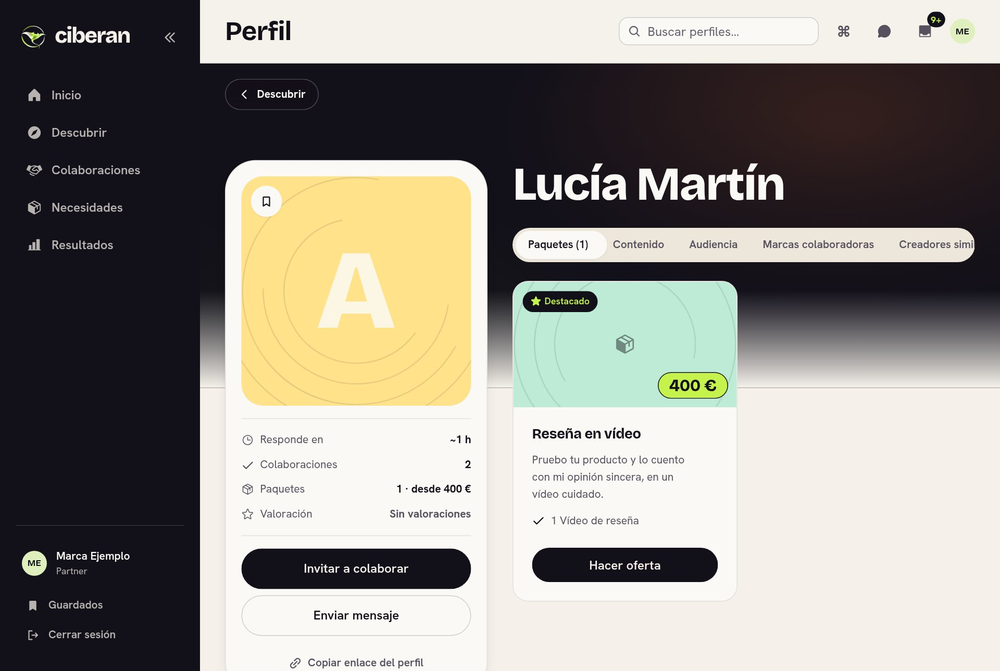
Qué puedes consultar
- Responde en: su tiempo de respuesta habitual.
- Colaboraciones: cuántas ha hecho en CIBERAN.
- Paquetes: cuántos tiene y desde qué precio.
- Valoración: lo que han dicho otras marcas. «Sin valoraciones» si todavía no tiene.
- Pestañas Paquetes, Contenido, Audiencia, Marcas colaboradoras y Creadores similares.
La audiencia la declara el propio creador y se marca como «declarada por el creador»: CIBERAN no la verifica.
Qué elementos ayudan a valorar una colaboración
| Elemento | Qué te dice |
|---|---|
| Valoración | Cómo fue colaborar con él para otras marcas. |
| Colaboraciones | Su experiencia dentro de CIBERAN. |
| Responde en… | Si es ágil en la comunicación. |
| Paquetes y precios | Qué ofrece y a qué precio. |
| Marcas colaboradoras | Con quién ha trabajado (si decidió mostrarlo). |
Desde el perfil tienes tres botones: Invitar a colaborar, Enviar mensaje y, en cada paquete, Hacer oferta. También hay un icono para copiar el enlace del perfil.
Colaboraciones
Todo lo que acuerdas con creadores está en Colaboraciones. Es igual que la del creador: cuatro vistas (Tablero, Lista, Calendario, Solicitudes), buscador, orden y Exportar CSV.
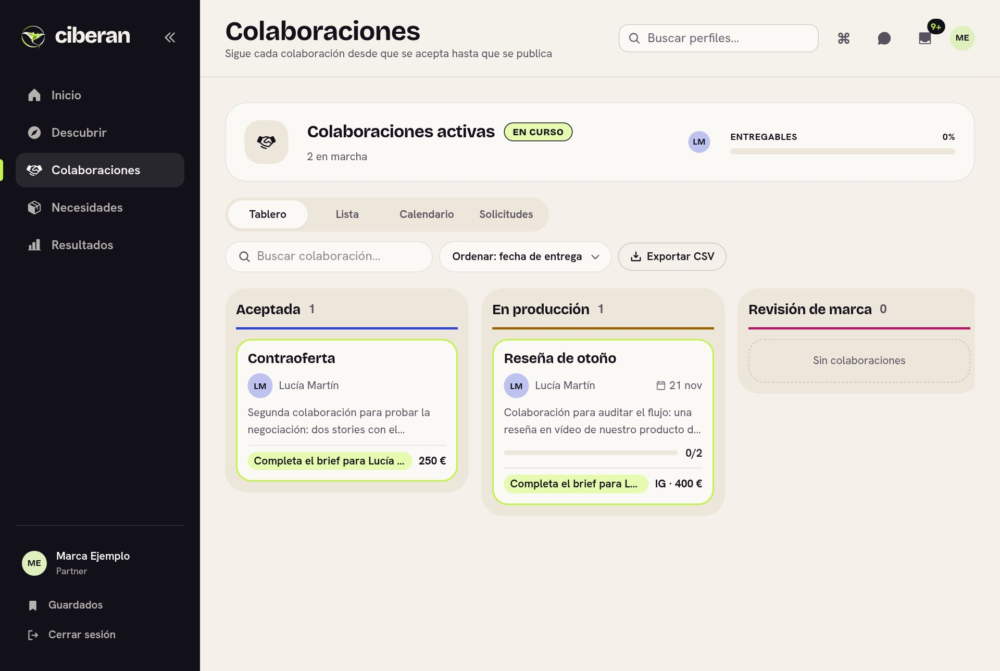
Iniciar una colaboración (contactar con un creador)
Qué queremos hacer: proponer a un creador que trabaje conmigo.
Pasos
- En Descubrir, pulsa Contactar en la tarjeta del creador (o Invitar a colaborar en su perfil). Se abre la hoja Contactar a….
- Si quieres, escribe un Nombre de la campaña (opcional).
- En Cuéntales tu campaña, explica qué necesitas y para cuándo.
- Escribe tu Presupuesto (€).
- Si quieres, completa Sobre la campaña (Objetivo, Público objetivo, Tono) y Condiciones (Alcance, Revisiones incluidas, Derechos de uso del contenido).
- Pulsa el botón de enviar.
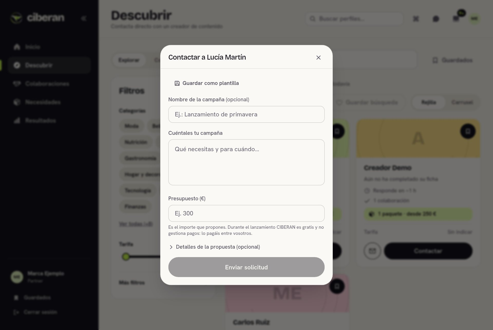
Qué sucede después
Verás «Solicitud enviada» y «Te avisamos en cuanto responda». Con Ver mis solicitudes vas a la vista Solicitudes. El creador recibe un aviso y tiene 7 días para responder: pasado ese plazo la solicitud caduca.
Enviar una propuesta u oferta
Hay tres caminos para proponer trabajo a un creador. Elige el que mejor encaje:
| Camino | Cuándo usarlo |
|---|---|
| Contactar / Invitar a colaborar | Quieres proponer una campaña propia, con tu presupuesto y tus condiciones. |
| Hacer oferta (sobre un paquete) | Te interesa un paquete concreto del creador y quieres ofertar sobre él, con el precio del listado u otro distinto. |
| Enviar mensaje | Quieres hablar antes de proponer nada. |
Si el creador tiene la privacidad del chat en «Solo tras oferta aceptada», no podrás escribirle en texto libre hasta que acepte una oferta tuya, pero sí mandarle una oferta.
Negociar y gestionar contraofertas
Cuando el creador responde con una contraoferta, te llega un aviso y la colaboración queda «te toca a ti». Dentro, en el bloque Presupuesto y respuesta, tienes las mismas tres opciones:
| Opción | Qué hace |
|---|---|
| Aceptar · (importe) | Aceptas el importe. La colaboración queda Aceptada. |
| Hacer contraoferta | Propones otro importe, con un mensaje opcional. |
| Rechazar solicitud | La rechazas. Pide confirmación: «¿Seguro? No se puede deshacer.» |
El aviso Siguiente paso te dice siempre a quién le toca. Se calcula según quién hizo la última propuesta: la otra parte espera tu respuesta, y tú la suya cuando haga una contraoferta.
Completar el brief y definir los entregables
Una vez aceptada la colaboración, el Siguiente paso del partner suele ser Completar brief.
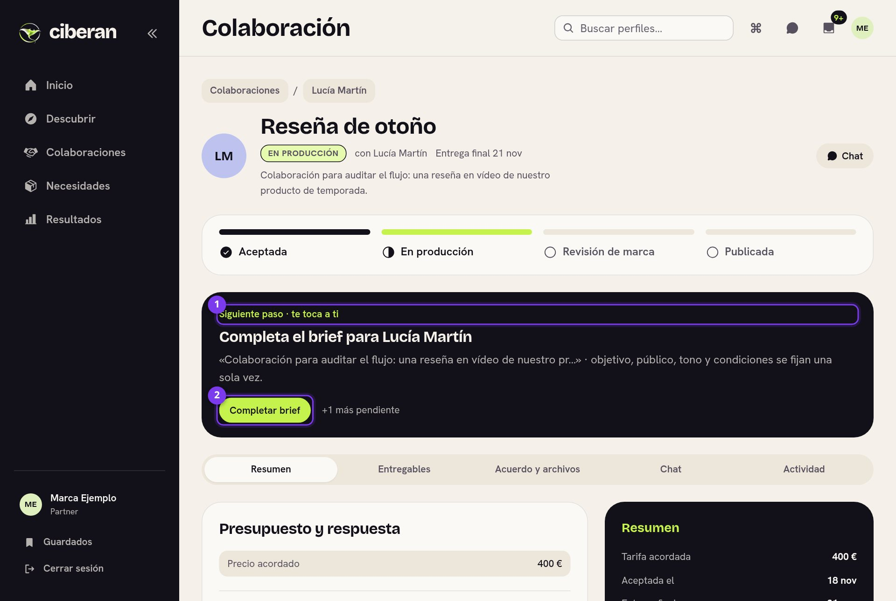
Completar el brief
- En la caja de Siguiente paso, pulsa (2) Completar brief.
- Rellena lo que falte: Objetivo de la campaña, Público objetivo, Tono, Alcance (qué se entrega), Revisiones incluidas (de 0 a 20) y Derechos de uso.
- Pulsa Guardar.
Definir los entregables
- Abre la pestaña Entregables.
- Pulsa Definir entregables.
- Escribe un entregable por línea (por ejemplo «1 reel de 30 s» y «3 stories») y pulsa Definir.
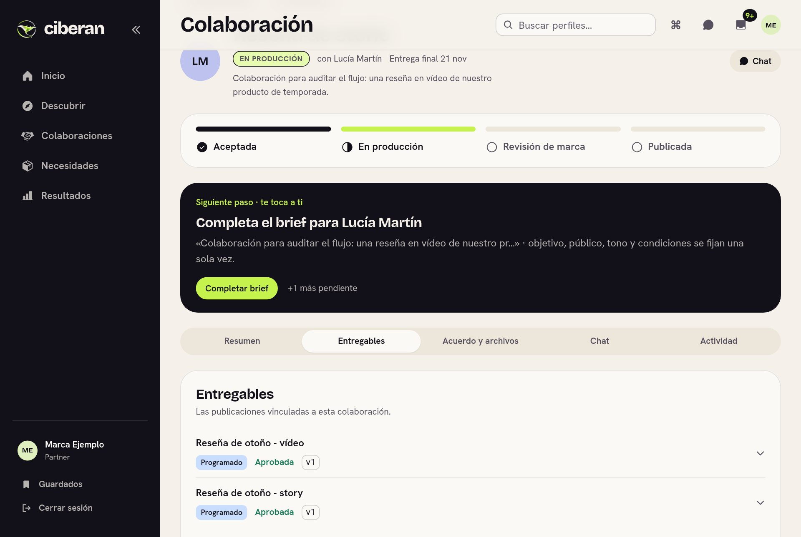
El creador tendrá que confirmarlos antes de que sean exigibles para completar la colaboración.
Revisar contenido: aprobar o pedir cambios
Cuando el creador envía una publicación a revisión (estado Para revisar), te aparece en la tarjeta Por revisar de tu Inicio y en la pestaña Entregables de la colaboración, y la fase pasa a Revisión de marca.
Pasos
- Abre la colaboración y la pestaña Entregables, o el aviso de Por revisar.
- Mira el contenido: la imagen, el texto, los hashtags y, si el creador lo puso, el enlace al borrador.
- Elige una de dos opciones:
- Aprobar: puedes añadir un comentario opcional.
- Pedir cambios: escribe en «¿Qué hay que cambiar?». Sé concreto: es justo lo que verá el creador. El comentario es obligatorio.
Qué sucede después
- Si apruebas, la entrega queda marcada como Aprobada y el creador la puede programar y publicar. Queda anotado en Actividad («… aprobada (v1)»).
- Si pides cambios, el creador recibe tu comentario, lo corrige y vuelve a enviarlo como nueva versión (v2, v3…). Verás en Actividad «Cambios pedidos» y luego «Nueva versión enviada a revisión».
Finalizar la colaboración
Cuando todas las entregas están aprobadas, el Siguiente paso pasa a «Cierra la colaboración…». Pulsa Marcar como completada en el bloque Presupuesto y respuesta. La colaboración queda Completada y puedes valorar al creador con estrellas y un comentario opcional.
La pestaña Acuerdo y archivos y las opciones de Más acciones (cancelar de común acuerdo, terminar por incumplimiento) son iguales que las del creador; están explicadas en la Parte III.
Gestión de campañas
CIBERAN no tiene un módulo de «campañas» como tal. Lo que sí ofrece para organizar y controlar tus colaboraciones es esto:
| Herramienta | Para qué te sirve |
|---|---|
| Nombre de campaña | Al contactar o proponer, puedes ponerle un nombre («Lanzamiento de primavera»). Ese nombre identifica la colaboración en tableros, listas, la bandeja y el buscador. Si no lo pones, se usa el nombre del paquete o la primera frase del brief. |
| Tablero y Lista | Ves todas tus colaboraciones por fase. |
| Calendario | Ves las fechas de entrega y puedes suscribir tu calendario externo con Suscribirme al calendario. |
| Exportar CSV | Descargas el listado para trabajar en una hoja de cálculo. |
| Resultados | Mides plazos, respuestas y revisiones. |
| Necesidades | Publicas lo que buscas para que los creadores te hagan ofertas. |
| Chat y Actividad | Hablas con el creador y consultas la cronología de cada colaboración. |
Necesidades
Qué son: lo que buscas. Una necesidad describe un encargo y su presupuesto (por ejemplo «Campaña de temporada · 500 €»). Un creador puede hacerte una oferta ajustándose a ella. Es el equivalente a los paquetes del creador.
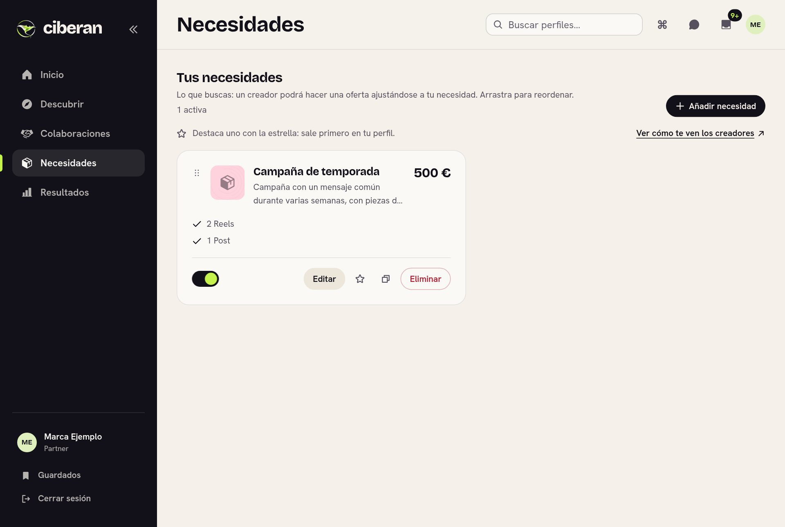
Publicar una necesidad
- Pulsa Necesidades en el menú y luego Añadir necesidad.
- Escribe el Título, la Descripción, los Entregables (uno por uno, con Intro) y el Presupuesto.
- Pulsa el botón de publicar.
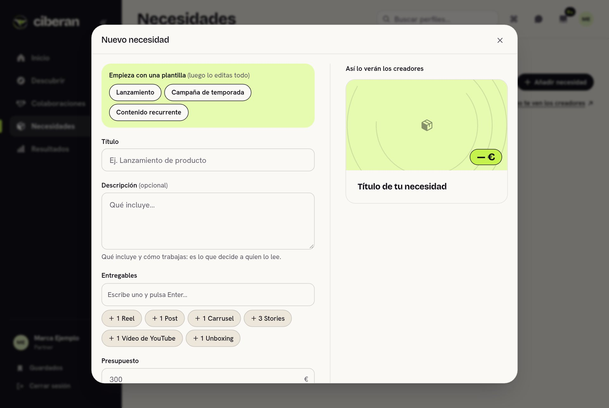
Como en los paquetes del creador, cada tarjeta permite Pausar, Editar, Duplicar, Eliminar, Destacar (la necesidad destacada sale primero en tu perfil) y reordenar arrastrando. Con Ver cómo te ven los creadores abres tu perfil público.
Resultados
Igual que en el creador, Resultados muestra cómo van tus colaboraciones dentro de CIBERAN, por periodos de 3 meses, 6 meses, 12 meses o Todo.
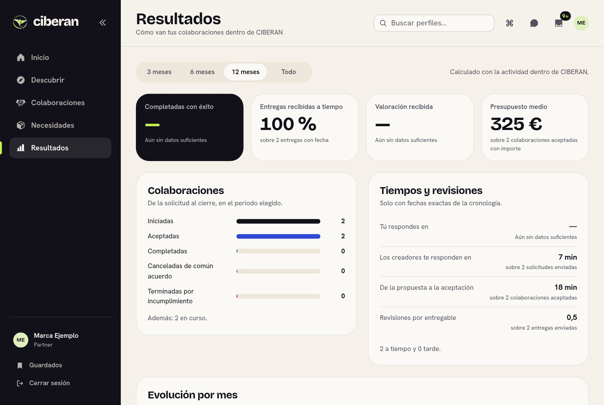
Incluye Completadas con éxito, Entregas recibidas a tiempo, Valoración recibida, Presupuesto medio, el recorrido de las colaboraciones, los tiempos y revisiones («Tú respondes en…», «Los creadores te responden en…»), la Evolución por mes y Tu fiabilidad: lo que dice tu historial en CIBERAN, que hoy solo ves tú y el equipo.
Cuenta y configuración
Pulsa tu avatar para ir a Perfil. Tiene cuatro pestañas: Resumen, Ficha pública, Necesidades y Privacidad.
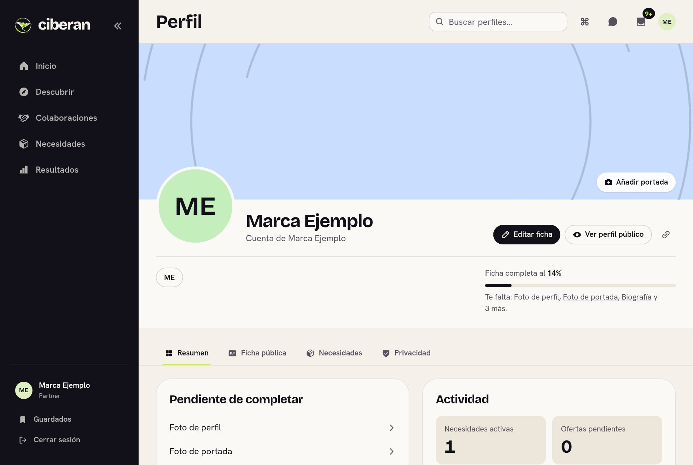
| Quiero… | Dónde |
|---|---|
| Completar mi ficha (logo, portada, biografía, categorías, presupuesto, qué tipo de creador buscas) | Perfil → Editar ficha |
| Ver cómo me ven los creadores | Perfil → Ver perfil público |
| Ver mis necesidades activas y las ofertas pendientes | Perfil → Resumen, con Ver colaboraciones y Gestionar necesidades |
| Elegir quién me escribe, qué avisos recibo y si mi perfil se ve sin iniciar sesión | Perfil → Privacidad |
| Ver el recorrido de bienvenida otra vez | Perfil → Resumen → Ver el recorrido de bienvenida |
| Cambiar mi contraseña o mi email | Perfil → Privacidad → Acceso a la cuenta |
| Ver los manuales en PDF | Menú → Ayuda |
| Cerrar sesión | Abajo del menú: Cerrar sesión |
También tienes Chat, Bandeja de entrada, Guardados y la paleta de comandos (Ctrl o Cmd + K), que funcionan igual que en el creador.
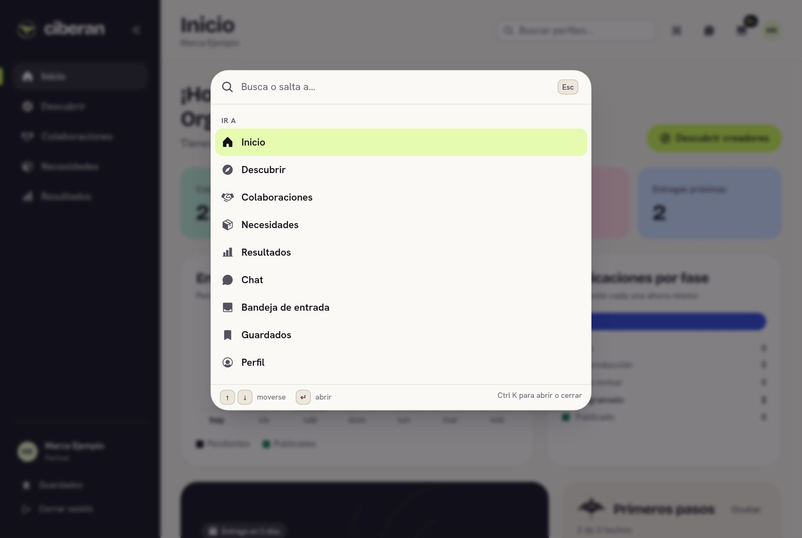
Parte V · Una colaboración de principio a fin
La situación: Marca Ejemplo quiere contratar a Lucía para una campaña de Instagram con un Reel y dos Stories, por 300 €.
Paso 1 · La marca descubre a la creadora
| La marca ve | La creadora ve |
|---|---|
| En Descubrir filtra por categoría «Belleza» y ordena por «Responden antes». Aparece la tarjeta de Lucía con su paquete destacado. | Nada todavía. |
Paso 2 · La marca consulta su perfil
| La marca ve | La creadora ve |
|---|---|
| Pulsa el nombre de Lucía y abre su perfil: su valoración, sus colaboraciones, cuánto tarda en responder, sus paquetes y su audiencia declarada. | Nada. |
Paso 3 · La marca envía una propuesta
| La marca hace | La creadora ve |
|---|---|
| Pulsa Contactar. Escribe «Campaña de otoño» como nombre de campaña, cuenta que busca un Reel y dos Stories para el 30 de noviembre, pone 300 € de presupuesto y envía. Ve «Solicitud enviada». | Nada aún: el aviso llega al paso siguiente. |
Paso 4 · La creadora recibe la solicitud
| La marca ve | La creadora ve |
|---|---|
| La solicitud en Colaboraciones → Solicitudes, en estado Pendiente de respuesta. | Un aviso en la Bandeja de entrada y la tarjeta Solicitudes pendientes en Inicio. Abre la solicitud y lee el brief y los 300 €. Verá un aviso de que la solicitud caduca en 7 días. |
Paso 5 · La creadora responde: acepta o hace una contraoferta
Lucía puede elegir entre Aceptar · 300 €, Hacer contraoferta o Rechazar solicitud. Supongamos que quiere 350 € porque la campaña lleva más trabajo:
| La creadora hace | La marca ve |
|---|---|
| Pulsa Hacer contraoferta, escribe 350 y un mensaje («Incluye guion y edición»), y envía. Su Siguiente paso pasa a «le toca a la marca». | Un aviso. En la colaboración, su Siguiente paso dice «te toca a ti», porque la última propuesta fue de Lucía. |
Paso 6 · La marca responde
La marca tiene tres opciones. Supongamos que acepta los 350 €:
| La marca hace | La creadora ve |
|---|---|
| Pulsa Aceptar · 350 €. | Un aviso de que la colaboración ha sido aceptada. |
Paso 7 · La colaboración queda aceptada
| La marca ve | La creadora ve |
|---|---|
| La colaboración pasa de Solicitudes a la columna Aceptada del tablero. Su Siguiente paso es Completar brief. | La colaboración en la columna Aceptada. Su Siguiente paso es «Crea la primera publicación para Marca Ejemplo». |
Paso 8 · Se prepara el contenido
| La marca hace | La creadora hace |
|---|---|
| Pulsa Completar brief y rellena objetivo, público, tono, revisiones incluidas (2) y derechos de uso. En Entregables, pulsa Definir entregables y escribe «1 Reel de 30 s», «2 Stories». | Entra en Entregables y pulsa Confirmar entregables. Después, Crear publicación para cada uno: se abre el editor con la colaboración ya elegida. Prepara el texto, los hashtags y la imagen, y mueve cada publicación a En producción. |
La fase de la colaboración pasa a En producción.
Paso 9 · Se entregan las publicaciones
| La creadora hace | La marca ve |
|---|---|
| Sube el borrador a Drive y pega el enlace en Enlace al borrador. Cambia la publicación a Para revisar. | La fase pasa a Revisión de marca. La tarjeta Por revisar de su Inicio sube a 1, y la publicación aparece en Entregables, con el enlace al borrador. |
Paso 10 · La marca revisa el contenido
| La marca hace | La creadora ve |
|---|---|
| Abre el contenido y lo mira. Elige Aprobar o Pedir cambios. | Espera. Su Siguiente paso indica que la marca tiene que revisar. |
Paso 11 · Revisiones, si hacen falta
Supongamos que a la marca le falta algo en la primera Story:
| La marca hace | La creadora ve |
|---|---|
| Pulsa Pedir cambios y escribe: «Falta la captura del producto y dos líneas de opinión». | Un aviso. En Historial de revisión y en Actividad lee el comentario. Corrige el contenido y lo envía otra vez: aparece como nueva versión (v2). |
La marca revisa la v2.
Paso 12 · Se aprueba el trabajo
| La marca hace | La creadora ve |
|---|---|
| Pulsa Aprobar en cada entrega. | Cada entrega muestra Aprobada. Programa la publicación y, cuando sale en Instagram, pulsa Marcar como publicada y pega el Enlace de la publicación. |
Paso 13 · Se completa la colaboración
| La marca ve | La creadora ve |
|---|---|
| Con todo aprobado y publicado, el Siguiente paso pasa a «Cierra la colaboración…». Pulsa Marcar como completada. | Lo mismo: el Siguiente paso le pide cerrar. Cualquiera de las dos partes puede marcarla como completada. |
La colaboración queda Completada. Cada parte puede dejar una valoración con estrellas y un comentario opcional. El pago de los 350 € lo acuerdan entre ellos: CIBERAN no lo gestiona.
Y si algo no sale como estaba previsto
La creadora rechaza la propuesta
En el paso 5, Lucía pulsa Rechazar solicitud y confirma con Sí, rechazar. La colaboración queda Rechazada. La marca ve el cambio de estado. Puede enviar otra propuesta distinta o contactar con otra persona.
Nadie responde
Una solicitud caduca a los 7 días si no se responde. Pasado ese plazo ya no se puede aceptar.
La marca pide cambios
Es el paso 11: la creadora corrige y vuelve a enviar. Cada envío es una nueva versión. Si el brief limitaba las revisiones incluidas, conviene tenerlo presente.
Se cancela una colaboración ya aceptada
Cualquiera de las dos partes puede, en Más acciones, Proponer cancelar de común acuerdo. La otra puede Aceptar la cancelación o Seguir con la colaboración. Si se acepta, queda Cancelada.
Una parte incumple
Quien se sienta perjudicado puede Dar por terminada por incumplimiento. Es una acción unilateral: queda en la cronología y la ve el equipo de CIBERAN. La colaboración queda Terminada por incumplimiento.
Se cambia una publicación después de aprobarla
La aprobación puede quedar invalidada y la marca tendrá que revisarla otra vez.
Parte VI · Preguntas frecuentes
Sobre mi cuenta
¿Qué diferencia hay entre creador y partner? El creador crea contenido y lo entrega; el partner (marca, empresa o agencia) contacta, acuerda y revisa. Cada cuenta tiene un único perfil, que se elige al registrarse. Mira la tabla de la Parte I.
¿Qué ocurre si tengo un problema de acceso? Si olvidaste la contraseña, usa ¿Olvidaste tu contraseña?. Si no te llega el correo, mira el spam y pide otro; usa siempre el último. Si ves «Todavía no has confirmado tu email», abre el correo de confirmación. Si ves «Demasiados intentos seguidos», espera unos minutos. Si nada de esto funciona, escribe al equipo de CIBERAN.
¿Puedo entrar con Google? No. Por ahora solo se entra con email y contraseña.
¿Puedo cambiar mi contraseña o mi email? Sí, en Perfil → Privacidad y cuenta → Acceso a la cuenta (en el partner, Perfil → Privacidad). Para la contraseña te pedimos la actual y un código de 6 dígitos que enviamos a tu correo. Si cambias el email, te pide tu contraseña actual y tendrás que abrir el enlace que enviamos al correo nuevo para que se aplique.
¿Puedo borrar mi cuenta? Sí, en Perfil → Privacidad y cuenta → Eliminar mi cuenta. No se puede deshacer. Antes puedes Descargar una copia de tus datos.
Sobre las colaboraciones
¿Cómo recibo una colaboración? Una marca te contacta o te hace una oferta sobre un paquete. Te llega un aviso a la Bandeja de entrada y aparece en Colaboraciones → Solicitudes. Tienes 7 días para responder.
¿Puedo negociar el precio? Sí. En lugar de aceptar o rechazar, pulsa Hacer contraoferta y propón otro importe. La negociación puede repetirse hasta que alguien acepte o rechace.
¿Qué sucede si rechazo una propuesta? La colaboración queda Rechazada y la otra parte lo ve. Rechazar no se puede deshacer: CIBERAN te pide confirmación antes.
¿Cómo sé cuándo tengo que actuar? Mira el Siguiente paso de cada colaboración («te toca a ti» o «le toca a…»), la tarjeta Por responder (partner) o Solicitudes pendientes (creador) de Inicio y la pestaña Qué me toca de la Bandeja de entrada.
¿Cómo se aprueba un entregable? Lo aprueba el partner, en la pestaña Entregables de la colaboración o desde Por revisar en su Inicio, con el botón Aprobar. Si algo no encaja, Pedir cambios con un comentario.
¿Qué significa cada estado? Hay estados de colaboración (Pendiente de respuesta, Aceptada, En curso, Completada, Rechazada, Cancelada, Terminada por incumplimiento) y fases de publicación (Idea, En producción, Para revisar, Programado, Publicado). Están explicados en la Parte III y en el glosario.
¿Cuánto cuesta usar CIBERAN? ¿Cómo se paga una colaboración? Durante el lanzamiento CIBERAN es gratis: sin cuotas ni comisiones. La plataforma no gestiona pagos: lo que acordáis lo pagáis y cobráis entre vosotros.
¿Qué pasa si una colaboración no se cumple? Puedes Proponer cancelar de común acuerdo o Dar por terminada por incumplimiento. También puedes Reportar. El equipo puede avisar o bloquear cuentas, pero no puede reclamar importes ni emprender acciones legales.
Sobre las publicaciones y los resultados
¿Cómo puedo consultar mis publicaciones? En Publicaciones (creador), en vista Tablero, Calendario o Lista. Las de una colaboración también están en su pestaña Entregables.
¿Puedo recuperar una publicación que borré sin querer? Durante 8 segundos tras borrarla aparece Deshacer. Pasado ese tiempo, se borra del todo.
¿Se pierde lo que escribo si cierro «Nueva publicación» a medias? No: CIBERAN guarda un borrador en tu navegador durante 14 días y te lo devuelve al abrir la ventana. Puedes descartarlo con Descartar.
¿Dónde puedo encontrar mis estadísticas? En Resultados: cómo van tus colaboraciones dentro de CIBERAN. Las métricas de redes sociales (alcance, likes, seguidores) todavía no están disponibles («Próximamente»).
¿Qué pasa con la predicción de rendimiento con IA? No está disponible en este momento.
¿Por qué mi imagen de la biblioteca sigue en una publicación si la borré? Porque al elegirla se hace una copia. Borrar el original no afecta a lo que ya la usa.
Otras dudas
¿Puedo usar CIBERAN en el móvil? Sí. La web se adapta al móvil y se puede instalar como app (página Instalar), sin pasar por ninguna tienda.
¿Quién ve mi perfil? Tú decides en Perfil → Privacidad y cuenta → Visibilidad del perfil: puede verse solo dentro de CIBERAN o también sin iniciar sesión con tu enlace. Las tarifas, el catálogo y el contacto siempre piden sesión.
¿Quién puede escribirme? En Privacidad del chat eliges: Cualquiera, o Solo tras oferta aceptada.
Parte VII · Glosario
| Término | Qué significa |
|---|---|
| Acuerdo | Lo que las dos partes han pactado en una colaboración: brief, condiciones e importe. Se consulta en la pestaña Acuerdo y archivos. |
| Aprobación | Cuando el partner da el visto bueno a un entregable. Se muestra como Aprobada. |
| Bandeja de entrada | El lugar donde ves lo que te toca hacer y tus avisos. |
| Biblioteca | Tu almacén de imágenes para reutilizar como portada (solo creadores). |
| Borrador | Lo que escribes en «Nueva publicación» y todavía no has guardado. CIBERAN lo conserva en tu navegador hasta 14 días. |
| Brief | La descripción de lo que se quiere conseguir con una colaboración: objetivo, público, tono y alcance. |
| Campaña | El conjunto de contenido que una marca encarga con un mismo objetivo. En CIBERAN se identifica con el nombre de campaña. |
| Colaboración | Un acuerdo entre un creador y un partner, con importe, entregables y plazos. |
| Contraoferta | Una respuesta a una propuesta con otro importe, en lugar de aceptar o rechazar. |
| Creador | Persona que crea contenido y lo publica en sus redes. |
| Descubrir | El buscador: los creadores buscan marcas y las marcas buscan creadores. |
| Entregable | Cada pieza de contenido que se acuerda entregar. |
| Ficha | La información de tu perfil (presentación, categorías, tarifa…). Tiene un porcentaje de completado. |
| Métricas | Datos de rendimiento de tus redes (alcance, likes…). Todavía no disponibles en CIBERAN. |
| Necesidad | Lo que busca un partner, con un presupuesto. Es el equivalente a los paquetes del creador. |
| Oferta | Una propuesta de precio sobre un paquete (o necesidad) concreto. |
| Paquete | Lo que ofrece un creador: un servicio con descripción, entregables y precio. |
| Paleta de comandos | La ventana que se abre con Ctrl + K (o Cmd + K) para ir a cualquier pantalla o buscar colaboraciones y perfiles. |
| Partner | Marca, empresa o agencia que contrata contenido. |
| Plantilla | Un formulario guardado (de publicación, de propuesta o de paquete) para no escribirlo de nuevo. |
| Propuesta | El primer paso de una colaboración: alguien plantea trabajar junto con unas condiciones. También se llama solicitud. |
| Publicación | Una pieza de contenido que el creador prepara y lleva de la idea a publicarla. Si es de una colaboración, es un entregable. |
| Raya | La mantarraya mascota de CIBERAN. Forma parte de la identidad visual: aparece en la página de inicio y en algunas pantallas vacías. No es una herramienta. |
| Resultados | La pantalla donde ves cómo van tus colaboraciones dentro de CIBERAN (plazos, respuestas, valoraciones). |
| Revisión | Cuando el partner examina un contenido y decide aprobarlo o pedir cambios. |
| Siguiente paso | El aviso de cada colaboración que dice qué hay que hacer ahora y a quién le toca. |
| Solicitud | Una propuesta de colaboración que espera respuesta. Caduca a los 7 días. |
| Studio | Término que se usa para las herramientas de creación del creador. En la aplicación no existe una sección con ese nombre; esas herramientas son Publicaciones, Biblioteca, Paquetes, plantillas y deshacer. |
| Versión (v1, v2…) | Cada vez que el creador reenvía un contenido tras unos cambios, se crea una versión nueva. |
Estado y mantenimiento de este manual
Datos de esta edición
| Fecha de elaboración | 20 de noviembre de 2026 (v1.1; primera edición: 19 de noviembre) |
| Versión del manual | 1.1 |
| Aplicación documentada | CIBERAN en su lanzamiento gratuito (noviembre de 2026). La aplicación no muestra un número de versión. |
| Cómo se ha elaborado | Recorriendo la aplicación con una cuenta de creador y otra de partner de prueba, y contrastando cada pantalla con su comportamiento real. Las capturas son reales; los datos personales se han sustituido por datos ficticios. |
Lo que no se ha podido comprobar
| Tema | Situación |
|---|---|
| Pantallas de responder a una solicitud (Aceptar, Contraoferta, Rechazar) y de revisión de la marca (Aprobar, Pedir cambios) | Descritas a partir de la aplicación y de su uso en cuentas de prueba, pero sin captura: no había colaboraciones en esos estados y el manual no modifica datos. |
| Valoración al completar una colaboración | Descrita a partir de la pantalla de la aplicación; sin captura. |
| Chat con conversaciones reales | No había conversaciones; solo se capturó la pantalla vacía. |
| Modo Con IA de Descubrir | Existe en pantalla; no se ha probado. |
| Envío de correos (confirmación, recuperación, avisos por correo) | Dependen de la configuración del servicio de correo; no se ha podido garantizar su entrega. |
| Código del correo al cambiar la contraseña, y cambio de email desde el perfil | La pantalla y sus mensajes están comprobados; la entrega del correo de confirmación depende del servicio de correo y no se ha podido garantizar. |
Funciones previstas pero no disponibles
Métricas de redes sociales, pagos y cobros dentro de CIBERAN, predicción de rendimiento con IA y acceso con Google.
Historial de cambios
| Versión | Fecha | Cambios |
|---|---|---|
| 1.0 | 19-11-2026 | Primera edición completa: creador y partner, colaboración de principio a fin, preguntas frecuentes y glosario. Incluye biblioteca de archivos, plantillas y duplicado, paleta de comandos, deshacer, enlaces de entrega, nombre de campaña, varias redes por publicación, paquetes y necesidades destacados, recuperación de contraseña y rechazo con confirmación. |
| 1.1 | 20-11-2026 | Cambio de contraseña (con código al correo, medidor de fortaleza y cierre de otras sesiones) y de email desde el perfil, enlace «Ayuda» dentro de la app, subida de imágenes desde el selector de la biblioteca, borrador automático de publicaciones, comparación de perfiles guardados, suscripción al calendario con enlace privado y renovable, avance de entregables «listas», perfiles sin ficha al final en Descubrir y tope de 50 imágenes en la biblioteca. |